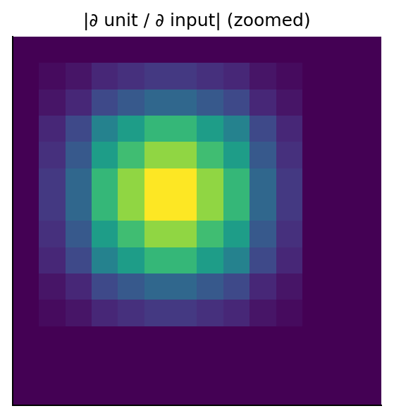
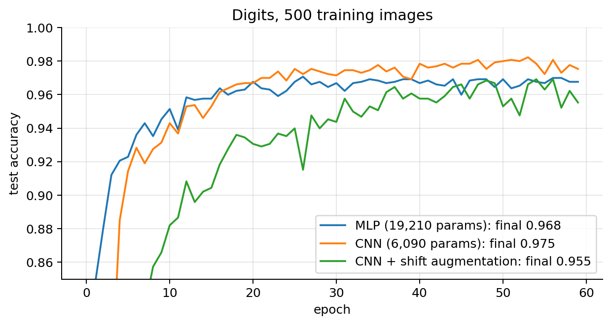
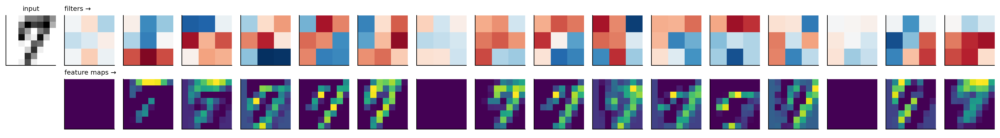
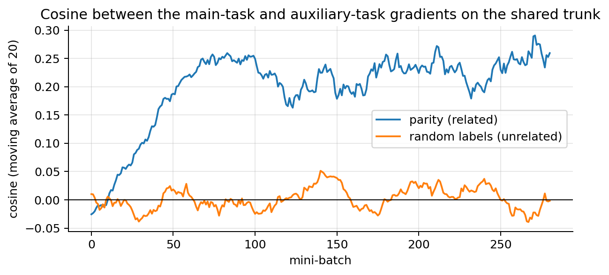
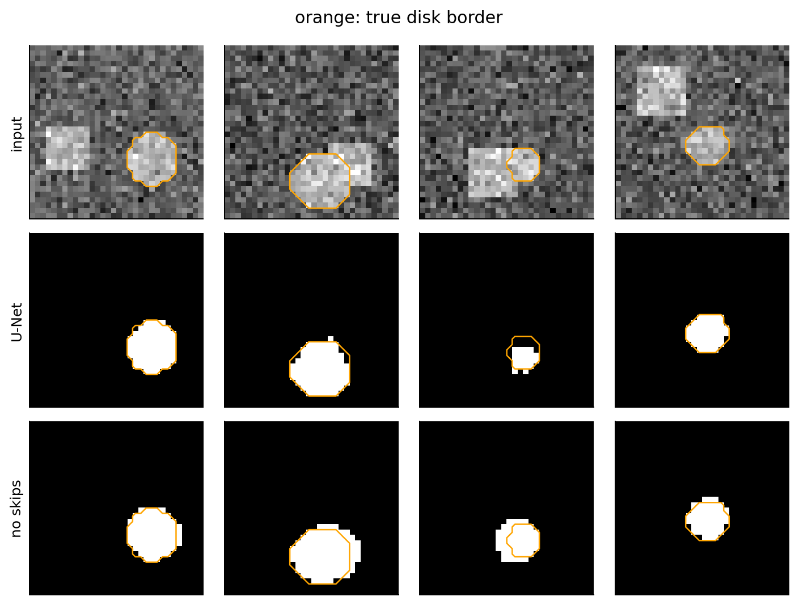

import time
import numpy as np
import matplotlib.pyplot as plt
import torch, torch.nn as nn, torch.nn.functional as F
plt.rcParams.update({"figure.dpi": 90, "axes.grid": True, "grid.alpha": 0.3,
"axes.spines.top": False, "axes.spines.right": False})
rng = np.random.default_rng(0); torch.manual_seed(0)
T_START = time.time()03 · Convolutional Neural Networks, Transfer Learning and Multi-Task Learning
Images, audio and other signals on a grid have structure that a multilayer perceptron ignores: nearby values belong together, and the same pattern can appear anywhere. A convolutional neural network (CNN) builds both facts into its layers, and with them it became the standard model for vision. This note derives the convolutional layer from a dense layer, computes its output size, parameter count, cost and receptive field, derives its backward pass, and trains CNNs on small images. It then covers the architectures that made CNNs deep (VGG, ResNet, 1×1 convolutions), the two ways of reusing a trained network (transfer learning and multi-task learning), and the two main vision tasks beyond classification: semantic segmentation (a class for every pixel) and object detection (a box, a class and a score for every object). It ends with the assumptions a CNN and a transferred model make, how to check them, and what to do when they fail.
What you need.
- NN note 00: the MLP, the row convention \(\mathbf{Z}^{[l]}=\mathbf{A}^{[l-1]}\mathbf{W}^{[l]}+\mathbf{b}^{[l]}\), softmax and cross-entropy.
- NN note 01: backpropagation as the chain rule on a graph; the error signal \(\boldsymbol{\delta}=\partial L/\partial\mathbf{Z}\); vanishing gradients.
- NN note 02: the PyTorch training loop, Adam, weight decay, dropout, data augmentation, BatchNorm and its train/eval modes.
- ML note 02: precision, recall and the precision–recall curve (restated in section 16.5 where they are used).
After this note you will be able to compute the output shape, parameters, multiply–adds and receptive field of any stack of convolution and pooling layers; derive the gradients of a convolution and of a transposed convolution; build and train a CNN in PyTorch; say when the built-in assumptions of a CNN help and when they hurt; choose a transfer-learning strategy and avoid its pitfalls (preprocessing, BatchNorm, domain shift); set up and balance a multi-task loss; and compute the metrics and post-processing of segmentation (IoU, Dice) and detection (box IoU, NMS, average precision) from scratch.
The same input serves four tasks that differ only in the output layer and the loss:
1. An image is a grid of numbers
A greyscale image is a matrix of pixel intensities (0 = black, 255 = white, usually rescaled to \([0,1]\)); a colour image is three such matrices, the red, green and blue channels. Neural networks are not restricted to vectors of features; they accept such formatted data directly:
- 1-D: audio, temporal signals (channels × length);
- 2-D: black and white images (height × width);
- 3-D: colour pictures (channels × height × width);
- 4-D: colour video (time × channels × height × width).
PyTorch puts the channels first, and a mini-batch adds a dimension 0: a batch of images has shape [B, C, H, W]. For a single image at prediction time, add the batch dimension with x.unsqueeze(0).
Our running example is the scikit-learn digits dataset (1,797 greyscale 8×8 images of handwritten digits, 10 classes), small enough to train CNNs in seconds on a CPU. As in NN note 02, we train on only 500 images.
from sklearn.datasets import load_digits
from sklearn.model_selection import train_test_split
from torch.utils.data import TensorDataset, DataLoader
d = load_digits()
Xd = (d.images / 16.0).astype(np.float32)[:, None] # (N, 1, 8, 8): pixels in [0, 1], channels first
X_tr, X_te, y_tr, y_te = train_test_split(Xd, d.target, train_size=500, stratify=d.target, random_state=0)
Xtr_t, ytr_t, Xte_t, yte_t = map(torch.tensor, (X_tr, y_tr, X_te, y_te))
print(f"batch of training images: {tuple(Xtr_t.shape)}; one image as a batch of one: {tuple(Xtr_t[0].unsqueeze(0).shape)}")
print("first image, pixel values x 16:\n", (d.images[0]).astype(int))batch of training images: (500, 1, 8, 8); one image as a batch of one: (1, 1, 8, 8)
first image, pixel values x 16:
[[ 0 0 5 13 9 1 0 0]
[ 0 0 13 15 10 15 5 0]
[ 0 3 15 2 0 11 8 0]
[ 0 4 12 0 0 8 8 0]
[ 0 5 8 0 0 9 8 0]
[ 0 4 11 0 1 12 7 0]
[ 0 2 14 5 10 12 0 0]
[ 0 0 6 13 10 0 0 0]]2. Why not flatten the image into an MLP?
An MLP flattens the image into a vector. Three problems follow:
- Too many parameters. A 224×224 RGB image is \(224\cdot224\cdot3=150{,}528\) numbers; a first dense layer with 1,000 units already needs about 150 million weights.
- No notion of position. A cat in the top-left and the same cat in the bottom-right are unrelated inputs: the MLP must learn the pattern at every position separately. Lab 9 showed it: shift the images a few pixels and the MLP’s accuracy collapses (section 10 measures it here).
- No notion of neighbourhood. Neighbouring pixels are related, far ones much less, but after flattening pixel \((0,0)\) is as “close” to \((0,1)\) as to \((223,223)\). Permuting the pixels (the same permutation for every image) does not change what an MLP can learn.
Two ideas fix all three. (1) Local connections: each unit looks at a small patch (3×3), not at the whole image. (2) Weight sharing: the same small set of weights is used at every position. Together they give the convolutional layer.
From a dense layer to a convolution (1-D). A dense layer from 7 inputs to 5 outputs computes \(z_o=\sum_{i=1}^7W_{oi}x_i\) with 35 independent weights. A convolution lets each output see only 3 neighbours (local) with always the same three weights \(k_1,k_2,k_3\) (shared): \(z_o=k_1x_o+k_2x_{o+1}+k_3x_{o+2}\). It is a dense layer whose \(5\times7\) weight matrix is forced to be banded and repeated: 20 of its 35 entries are 0 and the other 15 are copies of 3 numbers.
k = np.array([1.0, -2.0, 0.5]); x = rng.normal(size=7)
W_band = np.zeros((5, 7))
for o in range(5): W_band[o, o:o + 3] = k # row o holds the kernel at columns o..o+2
print(W_band)
print(f"zeros: {(W_band == 0).sum()} of {W_band.size}; W x == np.correlate(x, k, 'valid')? {np.allclose(W_band @ x, np.correlate(x, k, 'valid'))}")
n_in = 224 * 224 * 3
print(f"dense 150,528 -> 1,000: {n_in * 1000:,} weights; dense 224x224x3 -> 224x224x64: {n_in * 224 * 224 * 64:.1e}; "
f"conv 3x3, 3 -> 64 channels: {(3 * 9 + 1) * 64:,}")[[ 1. -2. 0.5 0. 0. 0. 0. ]
[ 0. 1. -2. 0.5 0. 0. 0. ]
[ 0. 0. 1. -2. 0.5 0. 0. ]
[ 0. 0. 0. 1. -2. 0.5 0. ]
[ 0. 0. 0. 0. 1. -2. 0.5]]
zeros: 20 of 35; W x == np.correlate(x, k, 'valid')? True
dense 150,528 -> 1,000: 150,528,000 weights; dense 224x224x3 -> 224x224x64: 4.8e+11; conv 3x3, 3 -> 64 channels: 1,7923. The convolution operation
A convolutional layer slides a small filter (kernel) \(\mathbf{K}\in\mathbb{R}^{F\times F}\) over the image \(\mathbf{X}\) and computes a weighted sum at each position: \[ Z_{ij}=\sum_{u=0}^{F-1}\sum_{v=0}^{F-1}X_{i+u,\,j+v}\,K_{uv}+b . \] Multiply the patch by the kernel element by element and add everything up. The output \(\mathbf{Z}\) is a feature map. The layer has three settings: the kernel size \(F\) (3×3 is typical), the stride \(S\) (the jump between positions, 1 here) and the padding \(P\) (zeros added around the border); section 4 derives the output size from them.
Cross-correlation, not convolution. Mathematical convolution flips the kernel: \((\mathbf{X}*\mathbf{K})_{ij}=\sum_{u,v}X_{i-u,\,j-v}K_{uv}\). The formula above, without the flip, is cross-correlation. Since the kernel is learned, the difference does not matter (the network would simply learn the flipped kernel), and every deep-learning library computes cross-correlation under the name “convolution”. The flip does reappear in the backward pass (section 8).
from scipy import signal
Xs = rng.normal(size=(5, 5)); Ks = rng.normal(size=(3, 3))
torch_out = F.conv2d(torch.tensor(Xs)[None, None], torch.tensor(Ks)[None, None])[0, 0].numpy()
print("F.conv2d == scipy correlate2d:", np.allclose(torch_out, signal.correlate2d(Xs, Ks, mode="valid")))
print("F.conv2d == scipy convolve2d with the flipped kernel:", np.allclose(torch_out, signal.convolve2d(Xs, Ks[::-1, ::-1], mode="valid")))F.conv2d == scipy correlate2d: True
F.conv2d == scipy convolve2d with the flipped kernel: TrueTry it. A 3×3 kernel slides over a 5×5 binary image. The X-shaped kernel adds up the four corners and the centre of the patch, so it responds most where the image has a diagonal of ones; the other two kernels detect a vertical edge (positive where bright is left of dark) and blur (the average of the patch).
The widget’s numbers, computed with a from-scratch conv2d (the loop is the formula above, with stride and padding added for section 4):
def conv2d(I, K, stride=1, pad=0):
I = np.pad(I, pad); F_ = K.shape[0]
H_out = (I.shape[0] - F_) // stride + 1; W_out = (I.shape[1] - F_) // stride + 1
O = np.zeros((H_out, W_out))
for i in range(H_out):
for j in range(W_out):
O[i, j] = np.sum(I[i * stride:i * stride + F_, j * stride:j * stride + F_] * K)
return O
IMG = np.array([[1, 1, 1, 0, 0], [0, 1, 1, 1, 0], [0, 0, 1, 1, 1], [0, 0, 1, 1, 0], [0, 1, 1, 0, 0]], float)
for name, Kw in [("X pattern", [[1, 0, 1], [0, 1, 0], [1, 0, 1]]), ("vertical edge", [[1, 0, -1]] * 3), ("blur", np.full((3, 3), 1 / 9))]:
print(f"{name}:\n{conv2d(IMG, np.array(Kw, float)).round(2)}")X pattern:
[[4. 3. 4.]
[2. 4. 3.]
[2. 3. 4.]]
vertical edge:
[[-2. 0. 2.]
[-3. -2. 2.]
[-3. -1. 2.]]
blur:
[[0.67 0.78 0.67]
[0.44 0.78 0.78]
[0.44 0.67 0.67]]Worked example: an edge detector. A 5×5 image with a vertical edge, and a 3×3 vertical-edge filter: \[ I=\begin{bmatrix}0&0&0&1&1\\0&0&0&1&1\\0&0&0&1&1\\0&0&0&1&1\\0&0&0&1&1\end{bmatrix},\qquad K=\begin{bmatrix}-1&0&1\\-1&0&1\\-1&0&1\end{bmatrix}. \] At the top-left position \((0,0)\) the window covers columns 0–2, all zeros, so \(Z_{00}=0\). At \((0,1)\) the window covers columns 1–3: the right column of the window is all 1s, times \(+1\), so \(Z_{01}=3\). At \((0,2)\), columns 2–4: the middle and right columns are 1, giving \(0\cdot3+1\cdot3=3\). The output is \(3\times3\) with rows \([0,3,3]\): the filter “lights up” at the edge.
I = np.array([[0, 0, 0, 1, 1]] * 5, dtype=float)
K = np.array([[-1, 0, 1]] * 3, dtype=float)
print("our conv2d:\n", conv2d(I, K))
print("torch F.conv2d:\n", F.conv2d(torch.tensor(I)[None, None], torch.tensor(K)[None, None])[0, 0].numpy())our conv2d:
[[0. 3. 3.]
[0. 3. 3.]
[0. 3. 3.]]
torch F.conv2d:
[[0. 3. 3.]
[0. 3. 3.]
[0. 3. 3.]]A filter is a pattern detector
Each output is a dot product between the kernel and a patch, \(Z_{ij}=\langle\mathbf{K},\mathbf{X}_{\text{patch}}\rangle+b\), i.e. a similarity score. By the Cauchy–Schwarz inequality, \(\langle\mathbf{K},\mathbf{X}_{\text{patch}}\rangle\le\lVert\mathbf{K}\rVert\,\lVert\mathbf{X}_{\text{patch}}\rVert\), with equality when the patch is a positive multiple of the kernel: among patches of a given energy, the one that looks like the kernel gives the largest response. The feature map is large where the image locally resembles the kernel and near zero elsewhere. Hand-made kernels like the ones below (Sobel edge filters) were the classic computer-vision features; a CNN learns its kernels by backprop, the 9 numbers being parameters like any other weight.
4. Output size: padding and stride
- Padding \(P\): add \(P\) rows/columns of zeros around the input, so that border pixels are covered and the size does not shrink.
- Stride \(S\): move the filter \(S\) pixels at a time (downsampling).
Derivation. Along one axis the padded input has length \(H+2P\). The window’s first index can be \(0,S,2S,\dots,kS\), as long as the window fits: \(kS+F\le H+2P\), i.e. \(k\le\frac{H+2P-F}{S}\). The number of valid positions is \(k_{\max}+1\): \[ \boxed{H_{\text{out}}=\left\lfloor\frac{H+2P-F}{S}\right\rfloor+1} \]
- “Same” padding: \(P=(F-1)/2\) with \(S=1\) keeps \(H_{\text{out}}=H\) (for \(F=3\), \(P=1\)).
- \(F=3\), \(P=0\), \(S=1\) loses 2 pixels; stride 2 halves the size.
- ResNet’s first layer: \(H=224\), \(F=7\), \(P=3\), \(S=2\) gives \(\lfloor(224+6-7)/2\rfloor+1=\lfloor223/2\rfloor+1=112\).
Try it. Change the input size, kernel, padding and stride; the output size follows the formula.
With the widget’s input \(H=7\) and \(F=3\): \(P=1\) keeps \(\lfloor(7+2-3)/1\rfloor+1=7\); adding stride 2 gives \(\lfloor6/2\rfloor+1=4\); a 5×5 kernel needs \(P=2\) to keep \(\lfloor(7+4-5)/1\rfloor+1=7\). The code checks these and three more cases against PyTorch:
for H, F_, P, S in [(7, 3, 1, 1), (7, 3, 1, 2), (7, 5, 2, 1), (28, 3, 0, 1), (28, 5, 2, 2), (224, 7, 3, 2)]:
out = F.conv2d(torch.zeros(1, 1, H, H), torch.zeros(1, 1, F_, F_), stride=S, padding=P).shape[-1]
print(f"H={H:3d} F={F_} P={P} S={S}: formula {(H + 2 * P - F_) // S + 1:3d} torch {out:3d}")H= 7 F=3 P=1 S=1: formula 7 torch 7
H= 7 F=3 P=1 S=2: formula 4 torch 4
H= 7 F=5 P=2 S=1: formula 7 torch 7
H= 28 F=3 P=0 S=1: formula 26 torch 26
H= 28 F=5 P=2 S=2: formula 14 torch 14
H=224 F=7 P=3 S=2: formula 112 torch 1125. Channels, parameters and cost
Real inputs and feature maps have several channels. A layer maps \(C_{\text{in}}\) input channels to \(C_{\text{out}}\) output channels. Each output channel \(c\) has its own filter of shape \(C_{\text{in}}\times F\times F\) (it looks at all input channels at once; its depth automatically matches the previous layer) plus a bias: \[
Z_{c,ij}=\sum_{c'=1}^{C_{\text{in}}}\sum_{u,v}X_{c',\,i+u,\,j+v}\,K_{c,c',uv}+b_c .
\] \(C_{\text{out}}\) filters give \(C_{\text{out}}\) feature maps. In PyTorch: nn.Conv2d(in_channels=3, out_channels=64, kernel_size=3, stride=1, padding=1).
Parameters. Each filter has \(F\cdot F\cdot C_{\text{in}}\) weights and one bias, and there are \(C_{\text{out}}\) filters: \[ \#\text{params}=(F\cdot F\cdot C_{\text{in}}+1)\cdot C_{\text{out}} , \] independent of the image size. Examples: 3×3, 3 → 64 channels: \((27+1)\cdot64=1{,}792\); 3×3, 64 → 128: \((9\cdot64+1)\cdot128=73{,}856\); the figure’s 4 filters of \(3\times3\times3\): \(4\cdot28=112\).
Cost. Each output value needs \(F\cdot F\cdot C_{\text{in}}\) multiply–adds (MACs), and there are \(H_{\text{out}}W_{\text{out}}C_{\text{out}}\) output values: \[ \#\text{MACs}=H_{\text{out}}\,W_{\text{out}}\,C_{\text{out}}\cdot F^2C_{\text{in}}\qquad(\text{FLOPs}\approx2\times\text{MACs}), \] while a dense layer from \(n_{\text{in}}\) to \(n_{\text{out}}\) units has \(n_{\text{in}}n_{\text{out}}\) weights and as many MACs. A convolution reuses each weight at every output position, so it has few parameters but a lot of computation; a dense layer uses each weight once. Section 9 tabulates both for a real network.
Weight sharing ⇒ translation equivariance. Shift the input by \((a,b)\): \(X'_{ij}=X_{i-a,\,j-b}\). Then (stride 1, ignoring the borders) \[ Z'_{ij}=\sum_{u,v}X'_{i+u,\,j+v}K_{uv}=\sum_{u,v}X_{i-a+u,\,j-b+v}K_{uv}=Z_{i-a,\,j-b}. \] The feature map of the shifted image is the shifted feature map: a pattern is detected wherever it appears, with the same weights. \(\blacksquare\) Section 10 checks this on a trained network and shows where it breaks (strides and pooling).
6. Pooling
Down-sampling can be done with the stride (stride 2 divides the size by 2), but the more common approach is a pooling layer, after the non-linear activation. Max pooling takes the maximum over each \(2\times2\) window with stride 2, \(O_{ij}=\max_{u,v\in\{0,1\}}A_{2i+u,\,2j+v}\); average pooling takes the mean.
- The pooled map is a summary of the features detected in the input. Max pooling asks “is the pattern present somewhere in this region?”, which tends to be more informative than its average presence.
- No parameters. It halves height and width: 4× fewer numbers, and 4× less computation for the next layer.
- Backward pass. For max pooling, \(\partial O_{ij}/\partial A_{2i+u,2j+v}\) is 1 for the position of the maximum and 0 elsewhere: the gradient is routed only to the winner (the “router” gate of NN note 01). For average pooling each of the four inputs receives \(\frac14\) of the gradient.
- Local invariance. Moving a feature by one pixel inside a window often does not change the max. Convolutions are equivariant (the output moves with the input); pooling and the final classifier make the network approximately invariant (the class does not change). For classification we want invariance; for localisation (predicting eye coordinates, masks or boxes) we need to keep spatial information, so too much pooling hurts.
M = torch.tensor([[3., 2, 0, 0], [0, 7, 1, 3], [5, 2, 3, 0], [0, 9, 2, 3]], requires_grad=True)
mx = F.max_pool2d(M[None, None], 2)[0, 0]; av = F.avg_pool2d(M[None, None], 2)[0, 0]
print("max pool:\n", mx.detach().numpy(), "\naverage pool:\n", av.detach().numpy())
mx.sum().backward(); print("gradient of sum(max pool) w.r.t. the input (1 at each window's max):\n", M.grad.numpy())max pool:
[[7. 3.]
[9. 3.]]
average pool:
[[3. 1.]
[4. 2.]]
gradient of sum(max pool) w.r.t. the input (1 at each window's max):
[[0. 0. 0. 0.]
[0. 1. 0. 1.]
[0. 0. 1. 0.]
[0. 1. 0. 0.]]Global average pooling averages each channel over the whole map, turning \((C,H,W)\) into a \(C\)-vector; modern CNNs use it before the final linear layer (section 12).
7. Receptive field
The receptive field of a unit is the region of the input image that can affect it. A \(3\times3\) conv on the input sees \(3\times3\) pixels. Each later layer with filter size \(F_l\) adds \(F_l-1\) units of its own input, and one unit of layer \(l-1\) is \(j_{l-1}=\prod_{i<l}S_i\) input pixels apart from its neighbour (the product of the strides before it, the jump). So \[ r_0=1,\qquad r_l=r_{l-1}+(F_l-1)\prod_{i=1}^{l-1}S_i . \] Proof by induction. A unit of layer \(l\) sees \(F_l\) consecutive units of layer \(l-1\). Their receptive fields are each \(r_{l-1}\) pixels wide and start \(j_{l-1}\) pixels apart, so together they span \(r_{l-1}+(F_l-1)j_{l-1}\) pixels. \(\blacksquare\)
Try it. Stacked 3×3 convolutions with stride 1 (a 1-D cross-section): each layer adds 2 pixels, so \(L\) layers see \(2L+1\).
For the architecture of the Fashion-MNIST CNN lab (conv3 → pool2 → conv3 → pool2):
| Layer | \(F_l\) | \(S_l\) | jump \(\prod_{i<l}S_i\) | receptive field \(r_l\) |
|---|---|---|---|---|
| conv 3×3, stride 1 | 3 | 1 | 1 | \(1+2\cdot1=3\) |
| max-pool 2×2, stride 2 | 2 | 2 | 1 | \(3+1\cdot1=4\) |
| conv 3×3, stride 1 | 3 | 1 | 2 | \(4+2\cdot2=8\) |
| max-pool 2×2, stride 2 | 2 | 2 | 2 | \(8+1\cdot2=10\) |
Stacking layers (and downsampling) grows the receptive field, so deep units see large parts of the image: layers close to the input learn low-level features (edges), deeper layers combine them into textures, parts and objects, because they see a larger patch. ResNet-50’s last layer has a receptive field of several hundred pixels: it sees the whole image. Two stacked 3×3 convs see 5×5 with fewer parameters (\(2\cdot9=18\) against 25 per channel pair) and an extra non-linearity in between, which is why modern networks use small filters (VGG, section 11).
Numerical check. The gradient of one output unit with respect to the input is non-zero exactly on the pixels that can affect it. We use average pooling and all-ones weights so that every path counts (max pooling passes gradient only to the winner of each window):
def receptive_field(layers): # layers = [(F, S), ...]
r, jump = 1, 1
for F_, S in layers:
r += (F_ - 1) * jump; jump *= S
return r
print("lab CNN (conv3, pool2, conv3, pool2):", receptive_field([(3, 1), (2, 2), (3, 1), (2, 2)]))
net = nn.Sequential(nn.Conv2d(1, 1, 3, padding=1), nn.AvgPool2d(2), nn.Conv2d(1, 1, 3, padding=1), nn.AvgPool2d(2))
with torch.no_grad():
for p in net.parameters(): p.fill_(1.0) # all-ones weights so every path counts
x = torch.rand(1, 1, 28, 28, requires_grad=True)
net(x)[0, 0, 3, 3].backward()
g = x.grad[0, 0]; nz = (g != 0).nonzero()
print("empirical extent of the gradient:", (nz[:, 0].max() - nz[:, 0].min() + 1).item(), "x", (nz[:, 1].max() - nz[:, 1].min() + 1).item())
fig, ax = plt.subplots(figsize=(3.4, 3.4)); ax.imshow(g[8:22, 8:22].numpy(), cmap="viridis"); ax.grid(False)
ax.set_title("|∂ unit / ∂ input| (zoomed)", fontsize=10); ax.set_xticks([]); ax.set_yticks([]); plt.tight_layout(); plt.show()lab CNN (conv3, pool2, conv3, pool2): 10
empirical extent of the gradient: 10 x 10
The empirical extent matches the formula. The gradient is not uniform inside the receptive field: central pixels are reached by more paths than border pixels, so the effective receptive field is concentrated in the middle, closer to a bump than to a square (Luo et al., 2016). With max pooling, a given unit’s gradient flows only through the winning position of each window, so for a specific input even fewer pixels matter. The receptive field is the largest region that can matter.
8. The backward pass of a convolution
Backprop through a convolutional layer needs three gradients, given the upstream error signal \(\boldsymbol{\delta}=\partial L/\partial\mathbf{Z}\) (NN note 01): with respect to the kernel (to update it), the bias, and the input (to continue backwards). They turn out to be convolutions too.
1-D first. Input \(x_0,\dots,x_{H-1}\), kernel \(k_0,\dots,k_{F-1}\), output \(z_o=\sum_{u=0}^{F-1}x_{o+u}k_u+b\) for \(o=0,\dots,H-F\), and \(\delta_o=\partial L/\partial z_o\).
Kernel. \(k_u\) appears in every output, multiplied by \(x_{o+u}\): \[ \frac{\partial L}{\partial k_u}=\sum_{o}\frac{\partial L}{\partial z_o}\frac{\partial z_o}{\partial k_u}=\sum_{o=0}^{H-F}\delta_o\,x_{o+u} \qquad\text{(chain rule; } \partial z_o/\partial k_u=x_{o+u}\text{)}. \] This is a “valid” cross-correlation of the input with \(\boldsymbol{\delta}\): slide \(\boldsymbol{\delta}\) (length \(H-F+1\)) over \(\mathbf{x}\); there are exactly \(F\) positions, one per kernel weight.
Bias. \(\partial L/\partial b=\sum_o\delta_o\) (the bias appears once in every output).
Input. \(x_i\) appears in output \(o\) with weight \(k_{i-o}\) whenever \(0\le i-o\le F-1\): \[ \frac{\partial L}{\partial x_i}=\sum_{o}\delta_o\,k_{i-o}=\sum_{u=0}^{F-1}\delta_{i-u}\,k_u \qquad(\text{substitute } u=i-o;\ \delta_j:=0 \text{ outside } 0\le j\le H-F). \] This is the full convolution of \(\boldsymbol{\delta}\) with \(\mathbf{k}\) (true convolution, with the flip), producing \(H\) values. Equivalently, it is a cross-correlation of \(\boldsymbol{\delta}\), zero-padded by \(F-1\) on each side, with the flipped kernel \(\tilde k_v=k_{F-1-v}\): \(\sum_v\delta_{i+v-(F-1)}\,k_{F-1-v}=\sum_u\delta_{i-u}k_u\) (substitute \(u=F-1-v\)).
2-D. The same two steps with double sums give \[ \frac{\partial L}{\partial K_{uv}}=\sum_{i,j}\delta_{ij}\,X_{i+u,\,j+v}\ \ (\text{valid cross-correlation of } \mathbf{X} \text{ with } \boldsymbol{\delta}),\qquad \frac{\partial L}{\partial X_{pq}}=\sum_{u,v}\delta_{p-u,\,q-v}\,K_{uv}\ \ (\text{full convolution of } \boldsymbol{\delta} \text{ with } \mathbf{K}), \] and \(\partial L/\partial b=\sum_{i,j}\delta_{ij}\). With channels, \(\partial L/\partial\mathbf{K}_{c,c'}=\mathbf{X}_{c'}\star\boldsymbol{\delta}_c\) and \(\partial L/\partial\mathbf{X}_{c'}=\sum_c\boldsymbol{\delta}_c*\mathbf{K}_{c,c'}\) (sum over the output channels that used input channel \(c'\)).
Consequences. The backward pass of a convolution is two more convolutions, so it costs about twice the forward pass, as for dense layers. The gradient with respect to the input is the full convolution with the 180°-rotated kernel; with a stride \(S>1\) it becomes a transposed convolution (section 15.3). We check all three against autograd, in double precision:
X2 = torch.randn(6, 7, dtype=torch.float64, requires_grad=True)
K2 = torch.randn(3, 3, dtype=torch.float64, requires_grad=True); b2 = torch.zeros(1, dtype=torch.float64, requires_grad=True)
Z2 = F.conv2d(X2[None, None], K2[None, None], b2)[0, 0] # (4, 5)
delta = torch.randn_like(Z2); (Z2 * delta).sum().backward() # upstream gradient dL/dZ = delta
Xn, Kn, dn = X2.detach().numpy(), K2.detach().numpy(), delta.numpy()
dK = signal.correlate2d(Xn, dn, mode="valid") # valid cross-correlation of X with delta
dX = signal.convolve2d(dn, Kn, mode="full") # full convolution of delta with K
dX_flip = signal.correlate2d(np.pad(dn, 2), Kn[::-1, ::-1], mode="valid") # same thing: padded delta, flipped kernel
print(f"dL/dK: max |ours - autograd| = {np.abs(dK - K2.grad.numpy()).max():.1e}")
print(f"dL/dX: max |ours - autograd| = {np.abs(dX - X2.grad.numpy()).max():.1e} (flipped-kernel form: {np.abs(dX_flip - X2.grad.numpy()).max():.1e})")
print(f"dL/db: {dn.sum():.6f} vs autograd {b2.grad.item():.6f}")dL/dK: max |ours - autograd| = 1.8e-15
dL/dX: max |ours - autograd| = 0.0e+00 (flipped-kernel form: 1.8e-15)
dL/db: 1.703488 vs autograd 1.7034889. A basic CNN, layer by layer
The typical pattern is [Conv → ReLU (→ BatchNorm)] × k → Pool, repeated, then flatten (or global-average-pool) → dense → logits. Pooling is combined with more filters: the spatial size shrinks while the number of channels grows, so each layer keeps a similar amount of computation while its units see larger regions.
The CNN of the slides for 28×28 greyscale images (Fashion-MNIST), with its shapes, parameters and multiply–adds computed from the formulas of section 5 and checked against PyTorch:
deck_cnn = nn.Sequential(
nn.Conv2d(1, 32, 3, padding=1), nn.ReLU(), # 28x28x32
nn.MaxPool2d(2), # 14x14x32
nn.Conv2d(32, 64, 3, padding=1), nn.ReLU(), # 14x14x64
nn.MaxPool2d(2), # 7x7x64
nn.Flatten(), # 3136
nn.Linear(3136, 128), nn.ReLU(),
nn.Linear(128, 10)) # logits
x = torch.zeros(1, 1, 28, 28); rows = []
for layer in deck_cnn:
x_in = x; x = layer(x)
if isinstance(layer, nn.Conv2d):
Cin, Cout, F_ = layer.in_channels, layer.out_channels, layer.kernel_size[0]
rows.append((f"conv {Cin}->{Cout}", (F_ * F_ * Cin + 1) * Cout, x.shape[2] * x.shape[3] * Cout * F_ * F_ * Cin, layer))
elif isinstance(layer, nn.Linear):
rows.append((f"dense {layer.in_features}->{layer.out_features}", (layer.in_features + 1) * layer.out_features,
layer.in_features * layer.out_features, layer))
total = sum(r[1] for r in rows); total_mac = sum(r[2] for r in rows)
print(f"{'layer':18s} {'params':>9s} {'(torch)':>9s} {'MACs':>11s}")
for name, p, mac, layer in rows:
print(f"{name:18s} {p:9,d} {sum(q.numel() for q in layer.parameters()):9,d} {mac:11,d}")
print(f"{'total':18s} {total:9,d} {'':9s} {total_mac:11,d}")
print(f"share of the parameters in the first dense layer: {rows[2][1] / total:.1%}; share of the MACs in the two convs: {(rows[0][2] + rows[1][2]) / total_mac:.1%}")layer params (torch) MACs
conv 1->32 320 320 225,792
conv 32->64 18,496 18,496 3,612,672
dense 3136->128 401,536 401,536 401,408
dense 128->10 1,290 1,290 1,280
total 421,642 4,241,152
share of the parameters in the first dense layer: 95.2%; share of the MACs in the two convs: 90.5%The first dense layer holds 95 % of the weights, while the two convolutions do about 90 % of the multiply–adds. That is why modern networks replace the flatten + dense head by global average pooling (section 12).
9.1 Training a small CNN on the digits
We compare a small CNN with an MLP, on the same 500 training images:
class SmallCNN(nn.Module):
def __init__(self):
super().__init__()
self.features = nn.Sequential(
nn.Conv2d(1, 16, 3, padding=1), nn.ReLU(), nn.MaxPool2d(2), # 16 x 4 x 4
nn.Conv2d(16, 32, 3, padding=1), nn.ReLU(), nn.MaxPool2d(2)) # 32 x 2 x 2
self.head = nn.Sequential(nn.Flatten(), nn.Dropout(0.3), nn.Linear(32 * 2 * 2, 10))
def forward(self, x): return self.head(self.features(x))
make_mlp = lambda: nn.Sequential(nn.Flatten(), nn.Linear(64, 256), nn.ReLU(), nn.Dropout(0.3), nn.Linear(256, 10))
def shift(x):
"""Data augmentation: shift each image by a random -1..1 pixels in each direction, zero fill."""
xp = F.pad(x, (1, 1, 1, 1)); B = x.shape[0]
dx, dy = torch.randint(0, 3, (B,)), torch.randint(0, 3, (B,))
return torch.stack([xp[b, :, dy[b]:dy[b] + 8, dx[b]:dx[b] + 8] for b in range(B)])
def fit(model, epochs=60, augment=None, seed=0, X=None, y=None, curve=True):
"""Adam, lr 3e-3, batches of 32; returns the test accuracy after every epoch (on the matching test set)."""
X = Xtr_t if X is None else X; y = ytr_t if y is None else y
torch.manual_seed(seed); np.random.seed(seed)
for mod in model.modules(): # re-initialise from the seed: reproducible runs
if isinstance(mod, (nn.Conv2d, nn.Linear)): mod.reset_parameters()
opt = torch.optim.Adam(model.parameters(), lr=3e-3)
loader = DataLoader(TensorDataset(X, y), batch_size=32, shuffle=True, generator=torch.Generator().manual_seed(seed))
accs = []
for _ in range(epochs):
model.train()
for xb, yb in loader:
if augment: xb = augment(xb)
opt.zero_grad(); F.cross_entropy(model(xb), yb).backward(); opt.step()
if curve:
model.eval()
with torch.no_grad(): accs.append((model(Xte_t).argmax(1) == yte_t).float().mean().item())
model.eval(); return accs
acc = lambda m, X, y=yte_t: (m(X).argmax(1) == y).float().mean().item()
n_params = lambda mdl: sum(p.numel() for p in mdl.parameters())
mlp = make_mlp(); runs = {f"MLP ({n_params(mlp):,} params)": fit(mlp)}
cnn = SmallCNN(); runs[f"CNN ({n_params(cnn):,} params)"] = fit(cnn)
cnn_aug = SmallCNN(); runs["CNN + shift augmentation"] = fit(cnn_aug, augment=shift)
plt.figure(figsize=(7, 3.8))
for k_, v in runs.items(): plt.plot(v, label=f"{k_}: final {v[-1]:.3f}")
plt.ylim(0.85, 1.0); plt.xlabel("epoch"); plt.ylabel("test accuracy"); plt.legend(); plt.title("Digits, 500 training images")
plt.tight_layout(); plt.show()
for k_, v in runs.items(): print(f"{k_:28s}: test accuracy after 60 epochs {v[-1]:.3f}, best {max(v):.3f}")
MLP (19,210 params) : test accuracy after 60 epochs 0.968, best 0.971
CNN (6,090 params) : test accuracy after 60 epochs 0.975, best 0.982
CNN + shift augmentation : test accuracy after 60 epochs 0.955, best 0.969The CNN matches or beats the MLP (0.975 against 0.968 after 60 epochs) with about a third of the parameters (6,090 against 19,210). On larger images (Fashion-MNIST, faces) the gap grows, because the prior matters more as images get bigger: the MLP’s parameter count explodes with the number of pixels, the CNN’s does not. The shift augmentation is discussed in section 9.3.
9.2 Looking inside a CNN
Below: the 16 learned \(3\times3\) filters of the first layer, and the 16 feature maps they produce for one digit. We also verify equivariance (section 5): shifting the input by one pixel shifts the feature maps by one pixel.
W1 = cnn.features[0].weight.detach()[:, 0] # (16, 3, 3)
x0 = Xte_t[:1]
with torch.no_grad(): fmap = F.relu(cnn.features[0](x0))[0] # (16, 8, 8)
fig, axes = plt.subplots(2, 17, figsize=(17, 2.4))
axes[0, 0].imshow(x0[0, 0].numpy(), cmap="gray_r"); axes[0, 0].set_title("input", fontsize=8)
axes[1, 0].axis("off")
for k_ in range(16):
axes[0, k_ + 1].imshow(W1[k_].numpy(), cmap="RdBu_r", vmin=-W1.abs().max().item(), vmax=W1.abs().max().item())
axes[1, k_ + 1].imshow(fmap[k_].numpy(), cmap="viridis")
for ax in axes.ravel(): ax.set_xticks([]); ax.set_yticks([]); ax.grid(False)
axes[0, 1].set_title("filters →", fontsize=8, loc="left"); axes[1, 1].set_title("feature maps →", fontsize=8, loc="left")
plt.tight_layout(); plt.show()
x_shift = torch.roll(x0, shifts=1, dims=3)
with torch.no_grad():
f_shift = cnn.features[0](x_shift)[0]; f_orig = cnn.features[0](x0)[0]
inner = (slice(None), slice(1, -1), slice(2, -1)) # compare away from the borders
print("max |conv(shift(x)) - shift(conv(x))| away from borders:",
(f_shift[inner] - torch.roll(f_orig, 1, dims=2)[inner]).abs().max().item())
max |conv(shift(x)) - shift(conv(x))| away from borders: 0.0The first layer of any CNN trained on photos learns oriented edges and colour blobs, much like the early visual cortex; that is why those layers transfer so well to new tasks (section 13). On 8×8 digits the filters are coarser, but several are clearly edge or stroke detectors.
Grad-CAM (Selvaraju et al., 2017) asks where the network looked: take the gradient of a class score \(y^c\) with respect to the last convolutional feature maps \(\mathbf{A}_k\), average it over the spatial positions to get one weight per map, \(\alpha_k=\frac{1}{HW}\sum_{i,j}\partial y^c/\partial A_{k,ij}\), and overlay \(\mathrm{ReLU}\big(\sum_k\alpha_k\mathbf{A}_k\big)\) on the image. If a “wolf” classifier lights up on the snow, it learned a shortcut (section 19.1).
9.3 Data augmentation for images
Random, label-preserving transformations applied on the fly, a new random version each epoch, to the training set only (NN note 02, section 8.3):
- Flip, rotation, crop: the object can appear anywhere, at any small angle.
- Colour shift, noise: tolerance to lighting and camera quality.
- Cut-out (information loss): parts of the object can be hidden.
Only transformations that keep the label (section 18.3 shows what a label-changing one does). For detection and segmentation, the boxes and masks must be transformed too (a flipped image needs a flipped mask). Libraries: torchvision.transforms.v2 (which transforms boxes and masks together with the image) and albumentations.
The shift augmentation of section 9.1 does not help the final accuracy here. The scikit-learn digits are already centred, and a 1-pixel shift is 12.5 % of an 8×8 image, so it mostly adds variation that the test set does not have. Augmentation helps when it reproduces variation that really occurs in new data; in the Fashion-MNIST lab, horizontal flips and dropout clearly reduced overfitting. Always check it on validation data.
Lab 10 · CNNs for image classification (Fashion-MNIST) (open in Colab). The clothes images of Lab 9, now with a CNN: the convolution from scratch; padding, stride, output size, channels and parameter count; translation equivariance, pooling and the receptive field checked in code; a small CNN with its learned filters and feature maps; shifted images, where the CNN keeps working and the MLP of Lab 9 fails; augmentation, dropout, and a stronger CNN with more filters and BatchNorm. A CPU works; a GPU is faster.
10. Inductive biases: what a CNN assumes, and when it is wrong
An inductive bias is an assumption built into a model, which lets it learn from fewer examples when the assumption is true and hurts when it is false. A CNN makes three.
- Locality. A unit depends only on a small patch of the previous layer. Assumes that the useful patterns are made of nearby pixels.
- Weight sharing ⇒ translation equivariance. The same filter at every position (section 5): a pattern means the same thing wherever it appears, and is detected wherever it appears.
- Pooling ⇒ approximate invariance. Small shifts should not change the answer.
The aliasing caveat. Equivariance is exact only for stride 1. A layer with stride 2 (a strided conv, or pooling) keeps every other position, so it is equivariant only to shifts by an even number of pixels; a shift by one pixel can change the output completely, not just move it. This is the aliasing of signal processing: subsampling a signal that contains details finer than the sampling step. A 1-D example with stride-2 subsampling:
sig = torch.tensor([0., 0., 1., 2., 1., 0., 0., 0.])
sub = lambda s: s[::2] # stride-2 subsampling
blur = lambda s: F.conv1d(F.pad(s[None, None], (1, 1), mode="replicate"), torch.tensor([[[1., 2., 1.]]]) / 4)[0, 0]
for sh in [0, 1, 2]:
xs = torch.roll(sig, sh)
print(f"shift {sh}: input {xs.numpy()} -> subsampled {sub(xs).numpy()} blurred then subsampled {sub(blur(xs)).numpy().round(2)}")shift 0: input [0. 0. 1. 2. 1. 0. 0. 0.] -> subsampled [0. 1. 1. 0.] blurred then subsampled [0. 1. 1. 0.]
shift 1: input [0. 0. 0. 1. 2. 1. 0. 0.] -> subsampled [0. 0. 2. 0.] blurred then subsampled [0. 0.25 1.5 0.25]
shift 2: input [0. 0. 0. 0. 1. 2. 1. 0.] -> subsampled [0. 0. 1. 1.] blurred then subsampled [0. 0. 1. 1.]A shift of 2 moves the subsampled output by one position, as it should; a shift of 1 turns \([0,1,1,0]\) into \([0,0,2,0]\), a different pattern. Blurring before subsampling (a low-pass filter, “anti-aliasing”) makes the outputs for the two shifts much more alike (\([0.25,1,1,0.25]\) against \([0,0.5,1.5,0.5]\) instead of \([0,1,1,0]\) against \([0,0,2,0]\)); Zhang (2019) inserts such a blur into max pooling (“BlurPool”). On the trained digits models, accuracy on test images shifted by one or two pixels (zero fill):
def shift_img(x, dx, dy): # deterministic shift by (dx, dy), zero fill
xp = F.pad(x, (2, 2, 2, 2)); return xp[..., 2 - dy:2 - dy + 8, 2 - dx:2 - dx + 8]
class GapCNN(nn.Module):
"""Three convs, global average pooling, a linear head; optional blur before each stride-2 subsampling."""
def __init__(self, blur=False):
super().__init__(); self.blur = blur
self.c1, self.c2, self.c3 = nn.Conv2d(1, 16, 3, padding=1), nn.Conv2d(16, 32, 3, padding=1), nn.Conv2d(32, 64, 3, padding=1)
self.head = nn.Linear(64, 10)
k1 = torch.tensor([1., 2., 1.]); self.register_buffer("bk", (k1[:, None] * k1[None, :] / 16)[None, None])
def down(self, x):
if not self.blur: return F.max_pool2d(x, 2)
x = F.max_pool2d(x, 2, stride=1); C = x.shape[1] # max, densely
x = F.conv2d(F.pad(x, (1, 1, 1, 1), mode="replicate"), self.bk.expand(C, 1, 3, 3), groups=C) # blur
return x[..., ::2, ::2] # then subsample
def forward(self, x):
x = self.down(F.relu(self.c1(x))); x = self.down(F.relu(self.c2(x))); x = F.relu(self.c3(x))
return self.head(x.mean((2, 3)))
gap, gap_blur = GapCNN(), GapCNN(blur=True)
fit(gap, curve=False); fit(gap_blur, curve=False)
shifts = [(0, 0), (1, 0), (0, 1), (1, 1), (2, 0)]
print("shift (dx, dy): " + " ".join(f"{s!s:>7}" for s in shifts))
with torch.no_grad():
for name, m in [("MLP", mlp), ("CNN (flatten head)", cnn), ("CNN (global avg pool)", gap), ("CNN (blur-pool + GAP)", gap_blur)]:
print(f"{name:22s} " + " ".join(f"{acc(m, shift_img(Xte_t, dx, dy)):7.3f}" for dx, dy in shifts))shift (dx, dy): (0, 0) (1, 0) (0, 1) (1, 1) (2, 0)
MLP 0.968 0.450 0.455 0.127 0.098
CNN (flatten head) 0.975 0.655 0.591 0.268 0.307
CNN (global avg pool) 0.971 0.685 0.586 0.295 0.417
CNN (blur-pool + GAP) 0.969 0.887 0.564 0.425 0.614All four models were trained on centred digits, without shift augmentation. A one-pixel shift costs the MLP more than half of its accuracy. The CNNs keep more, but they are far from invariant: a flatten head is position-specific, and the stride-2 poolings alias. Blurring before each subsampling lifts the accuracy for a one-pixel horizontal shift from 0.685 to 0.887, and for two pixels from 0.417 to 0.614. Vertical shifts stay hard for every model (an 8×8 digit loses part of its strokes at the border). For shifts that really occur in the data, the reliable remedy remains augmenting with them.
When the biases are wrong.
- Position matters. In aligned faces, ID photos, documents, or a fixed medical scanner, where something is carries information (an eye is expected at a certain place). Pure equivariance throws that away; zero padding leaks some absolute position at the borders, but unreliably. Remedy: add the coordinates as two extra input channels (CoordConv), positional embeddings, or a dense head that keeps the spatial layout.
- No spatial structure. Tabular data (columns of a claims table: age, premium, number of claims) have no neighbourhood: the column order is arbitrary, so locality and weight sharing are meaningless. Use gradient boosting or an MLP (ML note 07, NN note 00).
- Long-range dependencies, where far-apart parts of the image must be compared early: a CNN needs many layers to connect them; attention (vision transformers, NN note 05) connects them in one layer.
A test of the locality assumption. Scramble the pixels of every image with the same fixed permutation. The information is unchanged, and an MLP, which ignores the order of its inputs, is unaffected; a CNN has lost its assumption:
perm = torch.randperm(64, generator=torch.Generator().manual_seed(0))
scramble = lambda X: X.reshape(len(X), -1)[:, perm].reshape(-1, 1, 8, 8)
mlp_p, cnn_p = make_mlp(), SmallCNN()
fit(mlp_p, X=scramble(Xtr_t), curve=False); fit(cnn_p, X=scramble(Xtr_t), curve=False)
with torch.no_grad():
print(f"original pixels : MLP {acc(mlp, Xte_t):.3f}, CNN {acc(cnn, Xte_t):.3f}")
print(f"scrambled pixels: MLP {acc(mlp_p, scramble(Xte_t)):.3f}, CNN {acc(cnn_p, scramble(Xte_t)):.3f}")original pixels : MLP 0.968, CNN 0.975
scrambled pixels: MLP 0.971, CNN 0.961The MLP does not notice (0.968 and 0.971, within noise). The CNN loses more than a point (0.975 → 0.961) and falls below the MLP: with the neighbourhoods destroyed, its locality prior no longer matches the data. It does not collapse, because its last layer still sees the whole 8×8 image (receptive field 10, section 7) and can learn some of the scrambled patterns anyway.
11. Famous architectures and residual connections
Milestones on ImageNet (1.2 M images, 1,000 classes; the figure shows the top-5 error, the fraction of images whose true class is not among the five highest-scored):
- LeNet (1998): the first CNNs, for handwritten digits.
- AlexNet (2012): the first big CNN trained on GPUs, with ReLU and dropout. It won ImageNet by a huge margin (16 % against 26 % top-5 error). 60 M parameters.
- VGG (2014): only 3×3 convolutions and 2×2 max-pools, 16–19 layers. Two 3×3 layers see a 5×5 patch with 18 weights instead of 25 and an extra non-linearity (section 7).
- GoogLeNet/Inception (2014): modules that run 1×1, 3×3 and 5×5 convolutions in parallel and concatenate them, for features of different sizes, with 1×1 convolutions to keep the cost down.
- ResNet (2015): 50–152 layers thanks to residual connections, below the estimated human error. Later: EfficientNet, ConvNeXt, and vision transformers.
Why depth used to fail. A 56-layer plain CNN did worse than a 20-layer one, on the training set too (He et al., 2016). That is not overfitting but an optimisation problem: vanishing gradients and a hard-to-learn identity (NN note 01).
Residual block. Instead of learning a mapping \(H(\mathbf{x})\) directly, learn a correction \(F(\mathbf{x})\) and add the input back: \[ \mathbf{h}=F(\mathbf{x})+\mathbf{x}\qquad\Rightarrow\qquad\frac{\partial\mathbf{h}}{\partial\mathbf{x}}=\frac{\partial F}{\partial\mathbf{x}}+\mathbf{I}. \]
- An easy identity. If a block is not useful, it only needs \(F\approx\mathbf{0}\) (weights near 0) to become the identity; a plain block would have to learn the identity map with its weights. So a deeper residual net is at least as good as a shallower one.
- Gradient flow. Through \(L\) blocks \(\mathbf{x}_{l+1}=\mathbf{x}_l+F_l(\mathbf{x}_l)\), the chain rule gives \[ \frac{\partial J}{\partial\mathbf{x}_0}=\frac{\partial J}{\partial\mathbf{x}_L}\prod_{l=0}^{L-1}\Big(\mathbf{I}+\frac{\partial F_l}{\partial\mathbf{x}_l}\Big)=\frac{\partial J}{\partial\mathbf{x}_L}\Big(\mathbf{I}+\sum_l\frac{\partial F_l}{\partial\mathbf{x}_l}+\dots\Big). \] Expanding the product, one term is \(\frac{\partial J}{\partial\mathbf{x}_L}\) itself: the gradient reaches the first layer unchanged, however small the \(\partial F_l/\partial\mathbf{x}_l\) are (the “add” gate of NN note 01 copies its gradient to both inputs). In a plain network the same derivative is a product of \(L\) Jacobians, which shrinks or explodes geometrically.
The same trick is in every transformer block (NN note 05). A numerical check: the gradient reaching the first layer of a deep stack of dense layers at initialisation, plain against residual:
def grad_ratio(depth, residual, width=64, seed=0):
"""Norm of the gradient of the first layer's weights divided by that of the last layer's, at initialisation."""
torch.manual_seed(seed)
layers = nn.ModuleList([nn.Linear(width, width) for _ in range(depth)])
h = torch.randn(128, width)
for lin in layers:
h = h + lin(F.relu(h)) if residual else F.relu(lin(h)) # residual: x + F(x); plain: F(x)
h.pow(2).mean().backward()
return layers[0].weight.grad.norm().item() / layers[-1].weight.grad.norm().item()
for depth in [2, 10, 20, 40]:
print(f"depth {depth:2d}: ‖grad layer 1‖ / ‖grad last layer‖: plain {grad_ratio(depth, False):.1e}, residual {grad_ratio(depth, True):.2f}")depth 2: ‖grad layer 1‖ / ‖grad last layer‖: plain 3.8e-01, residual 1.08
depth 10: ‖grad layer 1‖ / ‖grad last layer‖: plain 9.1e-04, residual 1.36
depth 20: ‖grad layer 1‖ / ‖grad last layer‖: plain 9.3e-08, residual 1.72
depth 40: ‖grad layer 1‖ / ‖grad last layer‖: plain 9.4e-16, residual 1.55In the plain stack the first layer’s gradient is already a thousand times smaller than the last layer’s at depth 10, and \(10^{-15}\) times smaller at depth 40: its weights would not move. With the identity paths the ratio stays of order 1 at every depth. (Without normalisation the activations of this residual stack grow slowly with depth; real ResNets add BatchNorm in each block, and often initialise the last \(\gamma\) of each block to 0 so that every block starts as the identity.)
12. Two useful tricks: 1×1 convolutions and global pooling
1×1 convolution. With \(F=1\) the formula of section 5 becomes \(Z_{c,ij}=\sum_{c'}X_{c',ij}K_{c,c'}+b_c\): at every pixel, the vector of \(C_{\text{in}}\) channel values is multiplied by the same \(C_{\text{out}}\times C_{\text{in}}\) matrix. It is a dense layer applied at every pixel, across channels, with \((C_{\text{in}}+1)C_{\text{out}}\) parameters (\(256\cdot64+64=16{,}448\) for 256 → 64). Uses: shrinking the number of channels before an expensive 3×3 convolution (the bottleneck block of ResNet-50: 1×1 down to 64, 3×3, 1×1 back up to 256), and as the per-pixel classifier of segmentation heads (section 15).
Global average pooling (GAP). Average each feature map to one number: a \(7\times7\times512\) tensor becomes 512 numbers, followed by a single Linear(512, K). No parameters, far fewer weights than flatten + dense, more robust to where the object is, and the network accepts any image size (the average is taken over whatever \(H\times W\) arrives).
conv1x1 = nn.Conv2d(256, 64, 1); lin = nn.Linear(256, 64)
with torch.no_grad(): lin.weight.copy_(conv1x1.weight[:, :, 0, 0]); lin.bias.copy_(conv1x1.bias)
xx = torch.randn(2, 256, 7, 7)
same = torch.allclose(conv1x1(xx), lin(xx.permute(0, 2, 3, 1)).permute(0, 3, 1, 2), atol=1e-5)
print(f"1x1 conv == the same Linear applied at every pixel: {same}; params {n_params(conv1x1):,}")
p = lambda cin, cout, f: (f * f * cin + 1) * cout
plain, bottleneck = p(256, 256, 3), p(256, 64, 1) + p(64, 64, 3) + p(64, 256, 1)
print(f"3x3 conv 256->256: {plain:,} params; bottleneck 1x1 256->64, 3x3 64->64, 1x1 64->256: {bottleneck:,} ({bottleneck / plain:.0%})")
print(f"head of the deck CNN: flatten + Linear(3136, 128) + Linear(128, 10) = {3136 * 128 + 128 + 128 * 10 + 10:,} params; "
f"GAP + Linear(64, 10) = {64 * 10 + 10} params")1x1 conv == the same Linear applied at every pixel: True; params 16,448
3x3 conv 256->256: 590,080 params; bottleneck 1x1 256->64, 3x3 64->64, 1x1 64->256: 70,016 (12%)
head of the deck CNN: flatten + Linear(3136, 128) + Linear(128, 10) = 402,826 params; GAP + Linear(64, 10) = 650 params13. Transfer learning
Training a ResNet-50 from scratch needs about a million labelled images. You can use the same network as Google, but you do not have the same amount of data. The features learned on ImageNet (edges → textures → parts) are useful for almost any image task, so transfer learning reuses them:
- Download a trained network with its learned weights, e.g. a ResNet pre-trained on ImageNet (1.2 M images, 1,000 classes).
- Replace the last, task-specific layer by a new head for your task (randomly initialised).
- Freeze the first layers (
requires_grad = False): they do the general feature engineering. - Train the new head, and possibly the top layers, on your (smaller) dataset, with a small learning rate, feeding the images normalised as in pre-training.
m = torchvision.models.resnet18(weights="DEFAULT")
for p in m.parameters(): p.requires_grad = False
m.fc = nn.Linear(m.fc.in_features, n_classes) # the new head is trainable13.1 A decision guide
Two questions decide the strategy: how much labelled target data you have, and how similar the target images and task are to the pre-training ones.
| target similar to the source (photos of objects, like ImageNet) | target different (X-rays, satellite, microscopy, documents) | |
|---|---|---|
| small dataset (hundreds of images) | freeze everything, train only a new head (feature extraction) | freeze the early layers only (generic edges), fine-tune the top ones; or find a pre-trained model closer to your domain |
| medium | fine-tune the top blocks and the head | fine-tune most of the network |
| large dataset (100k+) | fine-tune everything with a small learning rate | fine-tune everything (pre-training still speeds up training), or train from scratch |
| Strategy | What is trained | When |
|---|---|---|
| Feature extraction | only the new head (backbone frozen) | very little data, task similar to the source |
| Fine-tuning | everything, with a small learning rate (10–100× smaller than from scratch) | more data, or a task that differs from the source |
| Freeze, then unfreeze | the head first for 1–2 epochs, then all | avoids large gradients from a random head damaging good features |
| Discriminative learning rates | lower \(\alpha\) for the backbone than for the head | a common extra gain |
backbone = torchvision.models.resnet50(weights="IMAGENET1K_V2")
backbone.fc = nn.Identity() # 2048-dim features
head = nn.Sequential(nn.Linear(2048, 512), nn.ReLU(), nn.Dropout(0.2), nn.Linear(512, 4))
model = nn.Sequential(backbone, head)
optimizer = torch.optim.AdamW([{"params": backbone.parameters(), "lr": 1e-4},
{"params": head.parameters(), "lr": 1e-3}], weight_decay=1e-4)13.2 Three pitfalls: preprocessing, BatchNorm, domain shift
- Use the pre-training preprocessing. The filters expect inputs from the pre-training distribution: resize to the pre-training resolution, then normalise with the ImageNet channel means \((0.485,0.456,0.406)\) and standard deviations \((0.229,0.224,0.225)\) (after scaling pixels to \([0,1]\)), in RGB order.
weights.transforms()in torchvision returns exactly that pipeline. - BatchNorm layers during fine-tuning.
requires_grad = Falsefreezes the weights and \(\gamma,\beta\), but not the running statistics: inmodel.train()mode every forward pass keeps updating them with the new data’s batches (NN note 02, section 9.3). With small fine-tuning batches those statistics are noisy. To keep the backbone exactly as pre-trained, put its BatchNorm layers in eval mode after everymodel.train()call:for mod in backbone.modules(): if isinstance(mod, nn.BatchNorm2d): mod.eval(). Re-estimating the statistics on the target data can also be done on purpose (below), with enough images. - Domain shift. If the target images differ in low-level statistics (brightness, contrast, sensor, colour), the frozen features no longer mean the same thing. Check it before choosing the strategy (section 18.5).
Normalise regression targets too (eye coordinates divided by the image width and height, ages standardised), so the loss is on a sensible scale (section 14).
13.3 A demo on the digits
A stand-in for “ImageNet → your photos”, without downloads. Source: 900 clean digit images with labels, used to pre-train a small CNN with BatchNorm, with inputs normalised by the source’s mean and standard deviation (our “ImageNet statistics”). Target: the other 897 images, as seen by a different scanner (half the contrast, a grey background, sensor noise), with only 2 or 5 labelled images per class; the rest is the target test set.
X_img, y_all = Xd, d.target
perm_all = np.random.default_rng(0).permutation(len(y_all)); s_idx, t_idx = perm_all[:900], perm_all[900:]
mu_s, sd_s = X_img[s_idx].mean(), X_img[s_idx].std() # "pre-training statistics"
X_tgt = np.clip(0.5 * X_img + 0.3 + 0.05 * np.random.default_rng(5).normal(size=X_img.shape), 0, 1).astype(np.float32)
norm = lambda X: torch.tensor((X - mu_s) / sd_s, dtype=torch.float32)
def bn_backbone():
return nn.Sequential(nn.Conv2d(1, 32, 3, padding=1, bias=False), nn.BatchNorm2d(32), nn.ReLU(), nn.MaxPool2d(2),
nn.Conv2d(32, 64, 3, padding=1, bias=False), nn.BatchNorm2d(64), nn.ReLU(), nn.MaxPool2d(2),
nn.Flatten()) # 64 x 2 x 2 = 256 features
def train_tl(model, X, y, epochs, params, bs=10, seed=0, freeze_bn=False):
torch.manual_seed(seed)
loader = DataLoader(TensorDataset(X, torch.tensor(y)), batch_size=bs, shuffle=True, generator=torch.Generator().manual_seed(seed))
opt = torch.optim.Adam(params)
for _ in range(epochs):
model.train()
if freeze_bn:
for mod in model.modules():
if isinstance(mod, nn.BatchNorm2d): mod.eval() # keep the pre-trained statistics
for xb, yb in loader: opt.zero_grad(); F.cross_entropy(model(xb), yb).backward(); opt.step()
return model.eval()
torch.manual_seed(0); pretrained = nn.Sequential(bn_backbone(), nn.Linear(256, 10))
train_tl(pretrained, norm(X_img[s_idx]), y_all[s_idx], 20, [{"params": pretrained.parameters(), "lr": 3e-3}], bs=32)
acc_t = lambda m, X, idx: (m(X[idx] if torch.is_tensor(X) else norm(X[idx])).argmax(1).numpy() == y_all[idx]).mean()
with torch.no_grad():
print(f"pre-trained model on clean held-out digits: with the pre-training normalisation {acc_t(pretrained, X_img, t_idx):.3f}, "
f"forgetting it (raw [0,1] pixels) {acc_t(pretrained, torch.tensor(X_img), t_idx):.3f}")
print(f"pre-trained model on the new scanner's images: {acc_t(pretrained, X_tgt, t_idx):.3f}")pre-trained model on clean held-out digits: with the pre-training normalisation 0.993, forgetting it (raw [0,1] pixels) 0.263
pre-trained model on the new scanner's images: 0.516Forgetting the pre-training normalisation is catastrophic even on clean images, and the new scanner costs about half of the accuracy. Before choosing a strategy, measure the shift: the pixel statistics, and whether a simple classifier can tell source from target images from the backbone’s features (a domain classifier; its AUC is 0.5 when the two are indistinguishable, section 18.5).
from sklearn.linear_model import LogisticRegression
from sklearn.model_selection import cross_val_predict
from sklearn.metrics import roc_auc_score
print(f"pixel mean / sd: source {X_img[s_idx].mean():.3f} / {X_img[s_idx].std():.3f}, target {X_tgt[t_idx].mean():.3f} / {X_tgt[t_idx].std():.3f}")
def domain_auc(model, Xa, Xb):
with torch.no_grad(): Z = np.vstack([model[0](norm(Xa)).numpy(), model[0](norm(Xb)).numpy()])
lab = np.r_[np.zeros(len(Xa)), np.ones(len(Xb))]
return roc_auc_score(lab, cross_val_predict(LogisticRegression(max_iter=3000), Z, lab, cv=5, method="predict_proba")[:, 1])
print(f"domain classifier AUC on backbone features: clean held-out vs source {domain_auc(pretrained, X_img[s_idx[:400]], X_img[t_idx[:400]]):.3f}; "
f"new scanner vs source {domain_auc(pretrained, X_img[s_idx[:400]], X_tgt[t_idx[:400]]):.3f}")pixel mean / sd: source 0.305 / 0.376, target 0.453 / 0.195
domain classifier AUC on backbone features: clean held-out vs source 0.479; new scanner vs source 1.000Now the strategies, with \(k=2\) and \(k=5\) labelled target images per class (averaged over 2 random draws). AdaBN (Li et al., 2016) uses no labels at all: it re-estimates the BatchNorm statistics on unlabelled target images and changes nothing else.
import copy
def adabn(model, X_unlab):
m = copy.deepcopy(model)
for mod in m.modules():
if isinstance(mod, nn.BatchNorm2d): mod.reset_running_stats(); mod.momentum = None # plain average over the data
m.train()
with torch.no_grad(): m(norm(X_unlab))
return m.eval()
results = {}
for k_lab in [2, 5]:
for seed in range(2):
r2 = np.random.default_rng(seed)
lab_idx = np.concatenate([r2.choice(t_idx[y_all[t_idx] == c], k_lab, replace=False) for c in range(10)])
test_idx = np.setdiff1d(t_idx, lab_idx); Xl, yl = norm(X_tgt[lab_idx]), y_all[lab_idx]
variants = {}
variants["pre-trained, as is"] = pretrained
variants["AdaBN (no labels)"] = adabn(pretrained, X_tgt[test_idx])
for bn_mode in ["BN frozen", "BN left in train mode"]:
m = copy.deepcopy(pretrained); m[1] = nn.Linear(256, 10)
for p in m[0].parameters(): p.requires_grad = False
variants[f"new head, backbone frozen ({bn_mode})"] = train_tl(m, Xl, yl, 100, [{"params": m[1].parameters(), "lr": 1e-2}],
seed=seed, freeze_bn=(bn_mode == "BN frozen"))
m = copy.deepcopy(pretrained)
variants["fine-tune everything, α = 1e-4"] = train_tl(m, Xl, yl, 100, [{"params": m.parameters(), "lr": 1e-4}], seed=seed)
torch.manual_seed(seed); m = nn.Sequential(bn_backbone(), nn.Linear(256, 10))
variants["from scratch"] = train_tl(m, Xl, yl, 100, [{"params": m.parameters(), "lr": 3e-3}], seed=seed)
with torch.no_grad():
for name, m in variants.items(): results.setdefault(name, {}).setdefault(k_lab, []).append(acc_t(m, X_tgt, test_idx))
print(f"{'target test accuracy':46s} {'2 labels/class':>15s} {'5 labels/class':>15s}")
for name, r in results.items(): print(f"{name:46s} {np.mean(r[2]):15.3f} {np.mean(r[5]):15.3f}")target test accuracy 2 labels/class 5 labels/class
pre-trained, as is 0.518 0.512
AdaBN (no labels) 0.983 0.983
new head, backbone frozen (BN frozen) 0.907 0.949
new head, backbone frozen (BN left in train mode) 0.923 0.962
fine-tune everything, α = 1e-4 0.981 0.980
from scratch 0.788 0.890- As is, the pre-trained model gets about half of the new scanner’s images right.
- AdaBN, without a single label, recovers 0.983. The shift here is a change of contrast and brightness, i.e. an affine map of the pixel values; the first BatchNorm standardises every channel of the first convolution, and re-estimating its mean and variance on target images undoes that map almost exactly.
- Fine-tuning everything with \(\alpha=10^{-4}\) on 20 or 50 labelled images is as good (0.981 and 0.980); its BatchNorm statistics adapt to the target during fine-tuning as well.
- A new head on frozen features does worse (0.907 and 0.949), because the frozen, source-normalised features are distorted by the shift. Leaving the frozen backbone’s BatchNorm in training mode, the “accidental” setting, is slightly better here (0.923 and 0.962): its statistics drift towards the target, a noisy AdaBN estimated from batches of 10. That can help or hurt; decide it deliberately.
- From scratch, 20 or 50 images are not enough (0.788 and 0.890).
So: measure the shift, try the free fix (AdaBN) first, and prefer fine-tuning over a frozen backbone when the low-level statistics changed.
Lab 12 · Transfer learning: eye positions with a ResNet-50 (open in Colab). A regression problem on real photos: predict the positions of both eyes \((x_l,y_l,x_r,y_r)\) from a face image, starting from a network pre-trained on ImageNet, in plain PyTorch: normalise the coordinates to \([0,1]\); a Dataset with ImageNet normalisation and light augmentation; ResNet-50’s classifier fc replaced by a small regression head with 4 outputs, MSE loss and RMSE metric; a training loop with gradient clipping and checkpointing of the best model; the predicted eyes drawn on test faces. Needs a GPU (Colab T4); the data are downloaded by the notebook.
14. Multi-task learning
Multi-task learning (MTL): one network for several related tasks, a shared backbone (trunk) \(\mathbf{h}=f_{\boldsymbol{\theta}}(\mathbf{x})\) and one small head per task, \(\hat y_k=g_{\boldsymbol{\phi}_k}(\mathbf{h})\). In the face lab: eye coordinates (regression), gender (binary classification) and age (regression) from one ResNet-50. The loss is a weighted sum, so the trunk receives gradient from every task: \[ J=\sum_k\lambda_kJ_k\qquad\Rightarrow\qquad\nabla_{\boldsymbol{\theta}}J=\sum_k\lambda_k\nabla_{\boldsymbol{\theta}}J_k,\qquad\nabla_{\boldsymbol{\phi}_k}J=\lambda_k\nabla_{\boldsymbol{\phi}_k}J_k . \]
- Why it can help: one forward pass gives three predictions (deployment is cheaper), the trunk gets more supervision per image, and it must produce features useful for all tasks, which acts as a regulariser (it cannot overfit one task’s quirks).
- Why it can hurt (negative transfer): when the task gradients point in conflicting directions, the shared trunk compromises (section 14.3).
14.1 The practical problem: loss scales
The trunk gradient is a sum, so the task with the largest loss (and gradient) magnitude dominates. In the face lab the raw losses at the start differ by six orders of magnitude: eye MSE on \([0,1]\) coordinates of order \(10^{-4}\) (about \(6\times10^{-5}\) in the lab run), gender BCE \(\approx\log2=0.69\) (chance), age MSE in years² \(\approx73\). With all \(\lambda_k=1\) the age term dominates and the eyes are not trained at all.
Fix 1: standardise the targets. Train each regression head on \(z\)-scores \(z=(y-\mu_k)/\sigma_k\), with the training-set statistics. Then every MSE starts around 1, comparable to the BCE at chance. For an MSE this is the same as choosing \(\lambda_k=1/\sigma_k^2\): with the prediction mapped back, \(\hat y=\mu_k+\sigma_k\hat z\), \[ \frac1m\sum_i\big(z^{(i)}-\hat z^{(i)}\big)^2=\frac1m\sum_i\Big(\frac{y^{(i)}-\mu_k}{\sigma_k}-\frac{\hat y^{(i)}-\mu_k}{\sigma_k}\Big)^2=\frac{1}{\sigma_k^2}\cdot\frac1m\sum_i\big(y^{(i)}-\hat y^{(i)}\big)^2 . \]
Fix 2: learn the weights by maximum likelihood (Kendall, Gal & Cipolla, 2018). Model regression task \(k\) as Gaussian with its own noise level, \(y_k\sim\mathcal{N}(\hat y_k,\sigma_k^2)\), with \(\sigma_k\) a learnable parameter. The negative log-likelihood of one example is \[ \begin{aligned} -\log p(y_k) &= -\log\Big[\frac{1}{\sqrt{2\pi}\,\sigma_k}\exp\Big(-\frac{(y_k-\hat y_k)^2}{2\sigma_k^2}\Big)\Big] && \text{Gaussian density}\\ &= \frac{(y_k-\hat y_k)^2}{2\sigma_k^2}+\log\sigma_k+\tfrac12\log(2\pi), && \log \text{ of a product and of } \exp \end{aligned} \] and averaging over the data and summing over independent tasks (the joint likelihood is a product), \[ J(\boldsymbol{\theta},\sigma_1,\dots,\sigma_K)=\sum_k\Big(\frac{1}{2\sigma_k^2}J_k(\boldsymbol{\theta})+\log\sigma_k\Big)+\text{const},\qquad J_k=\text{the MSE of task } k . \] Each task gets the weight \(\lambda_k=1/(2\sigma_k^2)\), learned jointly with the network: a noisy or large-scale task gets a large \(\sigma_k\) and hence a small weight, and the \(\log\sigma_k\) term stops \(\sigma_k\to\infty\) (which would switch the task off). For fixed network parameters, minimise over \(\sigma_k\): \[ \frac{\partial J}{\partial\sigma_k}=-\frac{J_k}{\sigma_k^3}+\frac{1}{\sigma_k}=0\quad\Longleftrightarrow\quad\sigma_k^2=J_k,\qquad\text{so}\qquad\lambda_k=\frac{1}{2J_k}: \] weights inversely proportional to each task’s current loss, the same effect as standardising, found automatically, and the same maximum-likelihood reasoning as always. In practice one learns \(s_k=\log\sigma_k^2\) (unconstrained, numerically stable) and uses \(\frac12e^{-s_k}J_k+\frac12s_k\); for a classification task the analogous term is \(e^{-s_k}J_k+\frac12s_k\) approximately.
Always compare with trivial baselines (mean coordinate, majority class, mean age) before believing that a multi-task model learned something.
14.2 Detecting negative transfer: the cosine of task gradients
Let \(\mathbf{g}_1=\nabla_{\boldsymbol{\theta}}J_1\) and \(\mathbf{g}_2=\nabla_{\boldsymbol{\theta}}J_2\) be the gradients of two tasks with respect to the shared parameters. A small step that decreases task 2, \(\boldsymbol{\theta}\leftarrow\boldsymbol{\theta}-\eta\,\mathbf{g}_2\), changes task 1’s loss by \[ J_1(\boldsymbol{\theta}-\eta\mathbf{g}_2)-J_1(\boldsymbol{\theta})\approx-\eta\,\mathbf{g}_1^\top\mathbf{g}_2=-\eta\,\lVert\mathbf{g}_1\rVert\lVert\mathbf{g}_2\rVert\cos(\mathbf{g}_1,\mathbf{g}_2) \] (first-order Taylor expansion of \(J_1\)). A positive cosine means that learning task 2 also helps task 1 at this point; a negative cosine means it hurts (a conflict). Monitoring \(\cos(\mathbf{g}_1,\mathbf{g}_2)\) on mini-batches during training is a cheap detector of negative transfer. Two cautions: (1) average it over many mini-batches, since single-batch values are noisy; (2) near a minimum of the sum \(J_1+J_2\), the shared gradients cancel, \(\mathbf{g}_1\approx-\mathbf{g}_2\), and the cosine tends to \(-1\) for any pair of tasks, so read it during training, not at convergence of a full-batch run.
Demo. A small CNN on 300 digits, with the digit (10 classes) as the main task and a binary auxiliary task sharing the trunk: a related one (the parity of the digit), and an unrelated one (random labels, which carry no information about the image).
X3, X3_te, y3, y3_te = train_test_split(Xd, d.target, train_size=300, stratify=d.target, random_state=0)
aux_tasks = {"parity (related)": y3 % 2, "random labels (unrelated)": np.random.default_rng(0).integers(0, 2, len(y3))}
def mtl_run(aux, seed=0, epochs=30):
torch.manual_seed(seed)
trunk = nn.Sequential(nn.Conv2d(1, 16, 3, padding=1), nn.ReLU(), nn.MaxPool2d(2),
nn.Conv2d(16, 32, 3, padding=1), nn.ReLU(), nn.MaxPool2d(2), nn.Flatten())
h_main, h_aux = nn.Linear(128, 10), nn.Linear(128, 2)
opt = torch.optim.Adam([*trunk.parameters(), *h_main.parameters(), *h_aux.parameters()], lr=1e-3)
ya = aux_tasks[aux] if aux else np.zeros_like(y3)
loader = DataLoader(TensorDataset(torch.tensor(X3), torch.tensor(y3), torch.tensor(ya)), batch_size=32, shuffle=True,
generator=torch.Generator().manual_seed(seed))
shared, cos = list(trunk.parameters()), []
for _ in range(epochs):
for xb, yb, ab in loader:
h = trunk(xb); l1 = F.cross_entropy(h_main(h), yb); loss = l1
if aux:
l2 = F.cross_entropy(h_aux(h), ab); loss = l1 + l2
g1 = torch.cat([g.flatten() for g in torch.autograd.grad(l1, shared, retain_graph=True)])
g2 = torch.cat([g.flatten() for g in torch.autograd.grad(l2, shared, retain_graph=True)])
cos.append((g1 @ g2 / (g1.norm() * g2.norm())).item())
opt.zero_grad(); loss.backward(); opt.step()
with torch.no_grad(): a = acc(lambda x: h_main(trunk(x)), torch.tensor(X3_te), torch.tensor(y3_te))
return a, np.array(cos)
plt.figure(figsize=(7, 3.4))
for aux in [None, *aux_tasks]:
out = [mtl_run(aux, seed=s) for s in range(2)]
a_mean = np.mean([o[0] for o in out])
if aux:
c = np.mean([o[1] for o in out], axis=0); smooth = np.convolve(c, np.ones(20) / 20, mode="valid")
plt.plot(smooth, label=aux)
print(f"{aux:26s}: mean cos(g_main, g_aux) {c.mean():+.3f}, negative on {np.mean(c < 0):.0%} of the batches; "
f"digit accuracy {a_mean:.3f}")
else:
print(f"{'single task':26s}: digit accuracy {a_mean:.3f}")
plt.axhline(0, color="k", lw=0.8); plt.xlabel("mini-batch"); plt.ylabel("cosine (moving average of 20)")
plt.legend(); plt.title("Cosine between the main-task and auxiliary-task gradients on the shared trunk")
plt.tight_layout(); plt.show()single task : digit accuracy 0.932
parity (related) : mean cos(g_main, g_aux) +0.193, negative on 10% of the batches; digit accuracy 0.925
random labels (unrelated) : mean cos(g_main, g_aux) +0.003, negative on 46% of the batches; digit accuracy 0.924
The related task’s gradient points, on average, in a direction that also helps the main task (mean cosine about +0.19, negative on only 10 % of the batches); the random-label task’s gradient is unrelated to it (mean cosine about 0, negative on about half of the batches): it only adds noise to the trunk. In this small example neither auxiliary task improves the digit accuracy (both are within a point of the single-task model): parity is a function of the digit, so it brings no information that the main labels do not already contain. Multi-task learning pays off when the auxiliary task brings extra supervision, as the eyes, gender and age do for a face trunk.
What to do with conflicting tasks: re-weight them (section 14.1); project away the conflicting component (PCGrad, Yu et al., 2020: when \(\mathbf{g}_1^\top\mathbf{g}_2<0\), replace \(\mathbf{g}_1\) by \(\mathbf{g}_1-\frac{\mathbf{g}_1^\top\mathbf{g}_2}{\lVert\mathbf{g}_2\rVert^2}\mathbf{g}_2\), which is orthogonal to \(\mathbf{g}_2\), and symmetrically); give the tasks separate branches after a shorter shared trunk; or drop the auxiliary task.
A detector is a multi-task network too: one backbone, a box head and a class head, a weighted sum of losses (section 16.3).
14.3 Less boilerplate: PyTorch Lightning
The training loop of NN note 02 is always the same: zero_grad, backward, step, move the data to the GPU, switch train()/eval(), log, save the best checkpoint. Lightning writes that loop for you; you fill in only the parts that change: the model, training_step (return the loss), validation_step, and configure_optimizers. The Trainer adds GPU support, gradient clipping, early stopping and checkpointing with one argument each. It does not make the model better; it removes a family of silent bugs (a forgotten zero_grad, metrics averaged wrongly, eval() never called). The multi-task face model of the lab:
class FaceNet(L.LightningModule):
def __init__(self):
super().__init__()
self.trunk = resnet50(weights="IMAGENET1K_V2")
self.trunk.fc = nn.Identity() # 2048 features
self.eyes = nn.Linear(2048, 4)
self.gender = nn.Linear(2048, 1)
self.age = nn.Linear(2048, 1)
def training_step(self, batch, idx):
h = self.trunk(batch["image"])
loss = (mse(self.eyes(h), batch["eyes_z"])
+ bce(self.gender(h).squeeze(1), batch["gender"])
+ mse(self.age(h).squeeze(1), batch["age_z"]))
self.log("train/loss", loss)
return loss # no backward(), no step()
def configure_optimizers(self):
return torch.optim.AdamW(self.parameters(), lr=1e-4)
trainer = L.Trainer(max_epochs=20, gradient_clip_val=1.0,
callbacks=[EarlyStopping(monitor="val/loss")])
trainer.fit(model, datamodule=dm)Lab 13 · Multi-task face analysis with Lightning (open in Colab). The faces and backbone of Lab 12 with three tasks at once: a trivial baseline for every task first; a LightningDataModule that computes the target statistics on the training split only; a LightningModule with the shared trunk, three heads, standardised targets and a weighted loss, with TorchMetrics; a Trainer with early stopping, checkpointing and a CSV logger; test evaluation against the baseline, learning curves and predictions on new faces. Needs a GPU (Colab T4).
15. Semantic segmentation
15.1 Three flavours
| Task | Output | Typical model | Example |
|---|---|---|---|
| Semantic | one class per pixel, \([K,H,W]\) | U-Net, DeepLab, SegFormer | road / car / sky for self-driving; damage / no damage |
| Instance | one mask + class per object | Mask R-CNN, YOLO-seg | count and separate each scratch or each cell |
| Panoptic | both: “stuff” by class, “things” by instance | Mask2Former | full scene understanding |
15.2 Classify every pixel
Classification: one softmax per image. Semantic segmentation: one softmax per pixel. The network outputs a tensor of logits \([K,H,W]\) (a score map per class), the prediction is the argmax per pixel, and the loss is the same cross-entropy, averaged over the \(H\times W\) positions: \[
J=-\frac{1}{HW}\sum_{i,j}\log\hat p_{ij}\big(y_{ij}\big),\qquad \hat p_{ij}(k)=\mathrm{softmax}_k\big(z_{k,ij}\big).
\] The labels are masks: an integer image with the class of every pixel, painted by hand (expensive!). nn.CrossEntropyLoss() accepts logits \([B,K,H,W]\) and targets \([B,H,W]\) directly.
Try it. Three score maps (background, car, person) for an 8×8 image; the argmax per pixel gives the mask on the right.
logits = torch.randn(2, 3, 4, 5); target = torch.randint(0, 3, (2, 4, 5)) # B=2, K=3, H=4, W=5
manual = -torch.log_softmax(logits, dim=1).gather(1, target[:, None]).mean() # -log p of the true class, every pixel
print(f"per-pixel cross-entropy: by hand {manual:.6f}, nn.CrossEntropyLoss {nn.CrossEntropyLoss()(logits, target):.6f}")per-pixel cross-entropy: by hand 1.308060, nn.CrossEntropyLoss 1.30806015.3 Fully convolutional networks and going back up
A classification backbone shrinks the image 32×. A fully convolutional network (FCN, Long et al., 2015) keeps the spatial grid: no Flatten, a 1×1 convolution (section 12) predicts \(K\) scores at each cell of the final grid, and an upsampling step brings them back to the input size. Because there is no dense layer, any image size works.
Upsampling ×32 in one go gives blobby masks. Better: go up gradually, and reuse the high-resolution features of the early layers (the U-Net, section 15.4). Three ways to go up:
- Nearest neighbour: copy each value into a 2×2 block. No parameters.
- Bilinear: interpolate between neighbouring values. No parameters, smoother. Both are usually followed by a normal conv to refine (
nn.Upsample). - Transposed convolution: each input value “paints” a copy of a learned kernel, scaled by the value, onto the output; overlaps add up (
nn.ConvTranspose2d). Same settings as a conv (kernel size, stride, padding); with stride 2 it doubles \(H\) and \(W\).
I2 = torch.tensor([[1., 2.], [3., 4.]])[None, None]
print("nearest:\n", F.interpolate(I2, scale_factor=2, mode="nearest")[0, 0].numpy())
print("bilinear:\n", F.interpolate(I2, scale_factor=2, mode="bilinear", align_corners=False)[0, 0].numpy())
print("transposed conv, kernel [[1, .5], [.5, .25]], stride 2:\n",
F.conv_transpose2d(I2, torch.tensor([[1., .5], [.5, .25]])[None, None], stride=2)[0, 0].numpy())nearest:
[[1. 1. 2. 2.]
[1. 1. 2. 2.]
[3. 3. 4. 4.]
[3. 3. 4. 4.]]
bilinear:
[[1. 1.25 1.75 2. ]
[1.5 1.75 2.25 2.5 ]
[2.5 2.75 3.25 3.5 ]
[3. 3.25 3.75 4. ]]
transposed conv, kernel [[1, .5], [.5, .25]], stride 2:
[[1. 0.5 2. 1. ]
[0.5 0.25 1. 0.5 ]
[3. 1.5 4. 2. ]
[1.5 0.75 2. 1. ]]Why “transposed”? A convolution is linear, so it is a matrix: \(\mathbf{z}=\mathbf{C}\mathbf{x}\), with \(\mathbf{C}\) the banded matrix of section 2 (with stride \(S\), row \(o\) holds the kernel at columns \(oS,\dots,oS+F-1\)). A convolution maps a long vector to a short one (\(\mathbf{C}\) is wide); its transpose \(\mathbf{C}^\top\) maps short to long. That is the transposed convolution: \(\mathbf{y}=\mathbf{C}^\top\mathbf{z}\), and entry \(i\) of \(\mathbf{C}^\top\mathbf{z}\) is \(\sum_oC_{oi}z_o=\sum_oz_o\,k_{i-oS}\): input \(o\) “paints” the kernel, scaled by \(z_o\), starting at output position \(oS\). Two consequences:
- Its output size inverts the convolution’s: \(H_{\text{out}}=(H_{\text{in}}-1)S-2P+F\) (PyTorch’s
output_paddingadds up to \(S-1\) to resolve the floor of section 4). - It is exactly the backward pass of a strided convolution with respect to its input: \(\partial L/\partial\mathbf{x}=\mathbf{C}^\top\boldsymbol{\delta}\) (section 8). Conversely, the backward pass of a transposed convolution is a normal convolution.
k1 = torch.tensor([1., 2., 3.]); H_in, S_ = 7, 2
H_o = (H_in - 3) // S_ + 1
C = torch.zeros(H_o, H_in)
for o in range(H_o): C[o, o * S_:o * S_ + 3] = k1 # the convolution as a matrix
x1 = torch.randn(H_in, requires_grad=True); z1 = F.conv1d(x1[None, None], k1[None, None], stride=S_)[0, 0]
print("C x == conv1d(x):", torch.allclose(C @ x1, z1), f" (C is {tuple(C.shape)})")
zt = torch.randn(H_o)
ct = F.conv_transpose1d(zt[None, None], k1[None, None], stride=S_)[0, 0]
print(f"C^T z == conv_transpose1d(z): {torch.allclose(C.T @ zt, ct)}; output length {len(ct)} = (3-1)*2 + 3")
z1.backward(zt); print("gradient of the strided conv w.r.t. x == conv_transpose1d(delta):", torch.allclose(x1.grad, ct))
ones = F.conv_transpose2d(torch.ones(1, 1, 4, 4), torch.ones(1, 1, 3, 3), stride=2)[0, 0]
print("how many kernel copies overlap at each output pixel (F=3, S=2):\n", ones[2:7, 2:7].int().numpy())C x == conv1d(x): True (C is (3, 7))
C^T z == conv_transpose1d(z): True; output length 7 = (3-1)*2 + 3
gradient of the strided conv w.r.t. x == conv_transpose1d(delta): True
how many kernel copies overlap at each output pixel (F=3, S=2):
[[4 2 4 2 4]
[2 1 2 1 2]
[4 2 4 2 4]
[2 1 2 1 2]
[4 2 4 2 4]]Checkerboard artefacts. The last print counts how many kernel copies land on each output pixel. With \(F=3\) and \(S=2\) the overlap alternates 1, 2, 1, 2 along each axis (and 1, 2, 4 in 2-D): some pixels receive more contributions than their neighbours, and a learned kernel easily turns that into a visible checkerboard pattern in generated images and masks (Odena et al., 2016). Remedies: a kernel size divisible by the stride (\(F=2\) or \(4\) with \(S=2\): uniform overlap), or upsampling by nearest/bilinear interpolation followed by a normal convolution.
15.4 U-Net: encoder, decoder, skip connections
- Encoder (left, down): conv + pooling, like any CNN, often a pre-trained ResNet. Understands what is in the image.
- Decoder (right, up): upsampling + conv. Recovers where.
- Skip connections (dashed): copy the encoder’s feature maps at each resolution and concatenate them to the decoder’s. They bring back the fine detail (exact borders) that the bottleneck lost.
Output: \(K\) channels at full resolution, one per class. Born in medical imaging (Ronneberger et al., 2015), still the default for segmentation, and the core of image generators such as Stable Diffusion.
Demo. Synthetic 32×32 scenes with one bright disk (the class to segment, say a damaged area) and one bright square (a distractor), plus noise. A tiny U-Net with two levels, trained with cross-entropy plus the soft Dice loss of section 15.5, against the same network without its skip connections:
def make_scenes(n, rng_, S=32):
"""Images with one bright disk (class 1) and one bright square (a distractor, class 0), plus noise."""
X = np.zeros((n, 1, S, S), np.float32); M = np.zeros((n, S, S), np.int64); yy, xx = np.mgrid[:S, :S]
for i in range(n):
cx, cy, r = rng_.uniform(6, 26), rng_.uniform(6, 26), rng_.uniform(3, 6)
disk = (xx - cx) ** 2 + (yy - cy) ** 2 <= r ** 2
sx, sy, s = rng_.integers(2, 22), rng_.integers(2, 22), rng_.integers(5, 10)
sq = np.zeros((S, S), bool); sq[sy:sy + s, sx:sx + s] = True
X[i, 0] = 0.8 * disk + 0.8 * (sq & ~disk) + 0.25 * rng_.normal(size=(S, S)); M[i] = disk
return torch.tensor(X), torch.tensor(M)
def block(ci, co):
return nn.Sequential(nn.Conv2d(ci, co, 3, padding=1), nn.BatchNorm2d(co), nn.ReLU(),
nn.Conv2d(co, co, 3, padding=1), nn.BatchNorm2d(co), nn.ReLU())
class TinyUNet(nn.Module):
def __init__(self, c=8, K=2, skips=True):
super().__init__(); self.skips = skips; m_ = 2 if skips else 1
self.e1, self.e2, self.b = block(1, c), block(c, 2 * c), block(2 * c, 4 * c)
self.u2, self.d2 = nn.ConvTranspose2d(4 * c, 2 * c, 2, stride=2), block(m_ * 2 * c, 2 * c)
self.u1, self.d1 = nn.ConvTranspose2d(2 * c, c, 2, stride=2), block(m_ * c, c)
self.out = nn.Conv2d(c, K, 1) # 1x1 conv: per-pixel classifier
def forward(self, x):
e1 = self.e1(x); e2 = self.e2(F.max_pool2d(e1, 2)); b = self.b(F.max_pool2d(e2, 2)) # 32 -> 16 -> 8
u2 = self.u2(b); d2 = self.d2(torch.cat([u2, e2], 1) if self.skips else u2) # 8 -> 16
u1 = self.u1(d2); d1 = self.d1(torch.cat([u1, e1], 1) if self.skips else u1) # 16 -> 32
return self.out(d1)
def soft_dice_loss(logits, target, eps=1.0):
p = torch.softmax(logits, 1)[:, 1]; t = (target == 1).float()
return (1 - (2 * (p * t).sum((1, 2)) + eps) / (p.sum((1, 2)) + t.sum((1, 2)) + eps)).mean()
def iou_dice(pred, true):
inter = (pred & true).sum().item(); union = (pred | true).sum().item()
return inter / union, 2 * inter / (pred.sum().item() + true.sum().item())
rng_u = np.random.default_rng(0); Xs_seg, Ms_seg = make_scenes(512, rng_u); Xv_seg, Mv_seg = make_scenes(128, rng_u)
seg_models = {}
for skips in [True, False]:
torch.manual_seed(0); net_s = TinyUNet(skips=skips); opt = torch.optim.Adam(net_s.parameters(), lr=3e-3)
for ep in range(12):
net_s.train(); order = torch.randperm(512)
for i in range(0, 512, 32):
idx = order[i:i + 32]; out = net_s(Xs_seg[idx])
loss = F.cross_entropy(out, Ms_seg[idx]) + soft_dice_loss(out, Ms_seg[idx])
opt.zero_grad(); loss.backward(); opt.step()
net_s.eval(); seg_models[skips] = net_s
with torch.no_grad(): P_ = net_s(Xv_seg).argmax(1)
iou_v, dice_v = iou_dice(P_ == 1, Mv_seg == 1)
print(f"U-Net {'with' if skips else 'without'} skip connections ({n_params(net_s):,} params): IoU {iou_v:.3f}, Dice {dice_v:.3f}, "
f"pixel accuracy {(P_ == Mv_seg).float().mean():.3f}")
print(f"pixel accuracy of predicting 'background' everywhere: {(Mv_seg == 0).float().mean():.3f}")
fig, axes = plt.subplots(3, 4, figsize=(8, 6))
with torch.no_grad(): P_skip, P_no = seg_models[True](Xv_seg[:4]).argmax(1), seg_models[False](Xv_seg[:4]).argmax(1)
for j in range(4):
for i, (img, t) in enumerate([(Xv_seg[j, 0], "input"), (P_skip[j], "U-Net"), (P_no[j], "no skips")]):
axes[i, j].imshow(img.numpy(), cmap="gray"); axes[i, j].contour(Mv_seg[j].numpy(), levels=[0.5], colors="orange", linewidths=1)
axes[i, j].set_xticks([]); axes[i, j].set_yticks([]); axes[i, j].grid(False)
if j == 0: axes[i, j].set_ylabel(t)
plt.suptitle("orange: true disk border"); plt.tight_layout(); plt.show()U-Net with skip connections (29,650 params): IoU 0.866, Dice 0.928, pixel accuracy 0.991
U-Net without skip connections (26,770 params): IoU 0.787, Dice 0.881, pixel accuracy 0.984
pixel accuracy of predicting 'background' everywhere: 0.937
With the skip connections the U-Net reaches an IoU of 0.866 on new scenes; the same network without them, which must rebuild the borders from the 8×8 bottleneck alone, reaches 0.787, with visibly rounder, blobbier masks. Note the pixel accuracies: predicting “background” everywhere already scores 0.937 because the disk covers only about 6 % of the pixels, which is why segmentation is measured with IoU and Dice (next section).
15.5 Measuring masks: IoU and Dice
With \(P\) the set of predicted pixels of a class and \(G\) the ground-truth pixels: \[ \mathrm{IoU}=\frac{|P\cap G|}{|P\cup G|},\qquad\mathrm{Dice}=\frac{2\,|P\cap G|}{|P|+|G|}. \] Both are 1 for a perfect mask and 0 for no overlap.
Claim. \(\mathrm{Dice}=\dfrac{2\,\mathrm{IoU}}{1+\mathrm{IoU}}\).
Proof. Write \(I=|P\cap G|\) and \(U=|P\cup G|\). Inclusion–exclusion gives \(U=|P|+|G|-I\), so \(|P|+|G|=U+I\). Then \[ \mathrm{Dice}=\frac{2I}{U+I}=\frac{2\,I/U}{1+I/U}=\frac{2\,\mathrm{IoU}}{1+\mathrm{IoU}}\qquad\text{(divide numerator and denominator by } U\text{)}.\quad\blacksquare \] So the two metrics rank predictions identically (the map \(t\mapsto2t/(1+t)\) is increasing); Dice is always at least IoU (because \(1+\mathrm{IoU}\le2\)), with equality only at 0 and 1: IoU 0.5 is Dice 0.667.
Try it. A ground-truth mask (green) and a prediction (blue), overlap in orange. Shift the prediction or change its size.
def blob(cx, cy, rad, N=10): # the widget's masks: a disc on a 10x10 grid
i, j = np.mgrid[:N, :N]; return np.hypot(i - cy, j - cx) <= rad
G_m = blob(4, 4.5, 2.6)
for dx, r in [(0, 2.6), (2, 2.6), (0, 1.6)]:
P_m = blob(4 + dx, 4.5, r); iou_m, dice_m = iou_dice(P_m, G_m)
print(f"shift {dx}, size {r}: |P| = {P_m.sum():2d}, |G| = {G_m.sum()}, |P∩G| = {(P_m & G_m).sum():2d}: "
f"IoU {iou_m:.3f}, Dice {dice_m:.3f}, 2·IoU/(1+IoU) = {2 * iou_m / (1 + iou_m):.3f}")shift 0, size 2.6: |P| = 22, |G| = 22, |P∩G| = 22: IoU 1.000, Dice 1.000, 2·IoU/(1+IoU) = 1.000
shift 2, size 2.6: |P| = 22, |G| = 22, |P∩G| = 12: IoU 0.375, Dice 0.545, 2·IoU/(1+IoU) = 0.545
shift 0, size 1.6: |P| = 8, |G| = 22, |P∩G| = 8: IoU 0.364, Dice 0.533, 2·IoU/(1+IoU) = 0.533- Why not pixel accuracy? If damage covers 2 % of the image, predicting “no damage” everywhere is 98 % accurate and useless. In the demo above, “background everywhere” already scores a high pixel accuracy. IoU and Dice ignore the easy true negatives (the background pixels correctly left out).
- mIoU: the IoU of each class, averaged over classes: the standard segmentation metric.
- Soft Dice loss. IoU and Dice of hard masks are not differentiable. Replace the sets by the predicted probabilities \(p_i\in[0,1]\) and the targets \(t_i\in\{0,1\}\): \(|P\cap G|\to\sum_ip_it_i\), \(|P|\to\sum_ip_i\), \(|G|\to\sum_it_i\), and minimise \[ L_{\text{Dice}}=1-\frac{2\sum_ip_it_i+\epsilon}{\sum_ip_i+\sum_it_i+\epsilon} \] (\(\epsilon\approx1\) avoids 0/0 on images without the class). It is usually added to the per-pixel cross-entropy (as in the demo) to fight class imbalance: the cross-entropy is dominated by the many background pixels, the Dice term by the overlap on the rare class.
16. Object detection
16.1 What and where: boxes
- Classification: what is in the image?
- Localisation: what, and where? One box \((x,y,w,h)\) regressed by the network, plus the class: a loss that combines regression and classification.
- Detection: all the objects, with a box, a class and a confidence for each. The number of objects is unknown.
Most bugs in detection code are box-format bugs: always check which convention a library and a dataset use.
from torchvision.ops import box_convert, box_iou, nms, batched_nms
box = torch.tensor([[128., 96., 384., 336.]]) # xyxy in a 640 x 480 image
print("xyxy :", box.tolist()[0])
print("xywh :", box_convert(box, "xyxy", "xywh").tolist()[0])
cxcywh = box_convert(box, "xyxy", "cxcywh"); print("cxcywh:", cxcywh.tolist()[0])
print("YOLO label (normalised cxcywh):", (cxcywh / torch.tensor([640., 480., 640., 480.])).numpy().round(2))xyxy : [128.0, 96.0, 384.0, 336.0]
xywh : [128.0, 96.0, 256.0, 240.0]
cxcywh: [256.0, 216.0, 256.0, 240.0]
YOLO label (normalised cxcywh): [[0.4 0.45 0.4 0.5 ]]16.2 Three generations of detectors
- Sliding window (2000s): crops at every position and size go through a classifier, \(10^4\)–\(10^5\) per image. Slow.
- Two-stage (R-CNN family, 2014–): about 1,000 proposals of likely regions, then classify and refine each box. Accurate, especially on small objects; slower.
- One-stage (YOLO, SSD, RetinaNet, 2016–): every cell of a grid predicts boxes and classes in one forward pass. Fast enough for video.
All of them reuse a classification CNN as the backbone; they differ in how they turn features into boxes. Modern YOLO versions closed most of the accuracy gap, which is why they are the practical default. Transformers also detect: DETR predicts a set of boxes directly, without NMS.
16.3 YOLO: every grid cell predicts
The backbone turns the image into an \(S\times S\) grid of feature vectors. A 1×1-conv head predicts, for every cell at once: an objectness score (is there an object whose centre is here?), the box (centre offset inside the cell, width, height) and class probabilities. One forward pass gives all boxes: “You Only Look Once”, which is why it runs in real time. The original YOLO (v1) outputs a tensor \(S\times S\times(5B+C)\): \(7\times7\times30\) for \(B=2\) boxes per cell and \(C=20\) classes.
Try it. Pick a cell: the one containing the car’s centre predicts a high objectness, a box and \(p(\text{car})\); the person’s cell its own box and class; a sky cell has objectness ≈ 0 and reports nothing. The widget’s output tensor is \(7\times7\times8\) (one box: objectness, 4 box numbers, 3 classes).
Modern YOLOs (v8, 11) use 3 grids of different sizes (for small, medium and large objects), predict the box as the distances from the cell centre to its 4 sides, and drop the objectness score: the class scores themselves say “nothing here”.
Training a detector: the loss. A detector is a multi-task network (section 14): a box regression and a classification at every cell. For YOLO11 (the lab): \[ J=\lambda_{\text{box}}\big(1-\mathrm{CIoU}\big)+\lambda_{\text{cls}}\,\mathrm{BCE}+\lambda_{\text{dfl}}\,\mathrm{DFL},\qquad\lambda_{\text{box}}=7.5,\ \lambda_{\text{cls}}=0.5,\ \lambda_{\text{dfl}}=1.5\ \text{(Ultralytics defaults)}. \]
- Box: \(1-\mathrm{IoU}\) (section 16.4); CIoU adds penalties for the distance between the centres and for the aspect ratio. Unlike an L1 loss on pixel coordinates, it does not depend on the object’s size.
- Class: an independent sigmoid + binary cross-entropy per class at every cell; most cells must say “no class” (all scores low).
- DFL (distribution focal loss): each side distance is predicted as a small distribution over 16 bins, for more precise borders.
- Assignment decides which predictions are responsible for which true object (the “positives”): the cell containing the centre (YOLOv1), the anchor boxes with the best IoU (YOLOv3–5), or a learned score mixing IoU and class confidence (YOLOv8–11, the task-aligned assigner). The box and DFL terms only use the positives. Older YOLOs (v1–v5) also had an objectness term.
- Class imbalance is huge (thousands of background cells for a few objects): focal loss \(-(1-p_t)^\gamma\log p_t\) (Lin et al., 2017) down-weights the easy, confidently classified cells so the rare objects dominate the gradient.
16.4 IoU for boxes: when is a prediction correct?
\[ \mathrm{IoU}(B_p,B_g)=\frac{\mathrm{area}(B_p\cap B_g)}{\mathrm{area}(B_p\cup B_g)}, \] where for axis-aligned boxes \((x_1,y_1,x_2,y_2)\) the intersection is the box \(\big(\max(x_1),\max(y_1),\min(x_2),\min(y_2)\big)\) if it is non-empty. A prediction matches a true object if the class is right and their IoU is at least a threshold (often 0.5). Matched: a true positive (TP). Unmatched prediction: a false positive (FP). Unmatched truth: a false negative (FN).
IoU 0.5 is stricter than it sounds. Two squares of side \(a\), one shifted by \(d\le a\) along one axis: the intersection is \(a(a-d)\) and the union \(2a^2-a(a-d)=a(a+d)\), so \[ \mathrm{IoU}=\frac{a-d}{a+d}=\frac12\quad\Longleftrightarrow\quad2(a-d)=a+d\quad\Longleftrightarrow\quad d=\frac a3 : \] shifting a square by a third of its side already brings the IoU down to the usual threshold.
Try it. A ground-truth box (green) and a prediction (blue, dashed). The widget shifts the prediction diagonally (by \(x\) horizontally and \(0.3x\) vertically) and scales it.
def iou_xyxy(a, b):
iw = max(0.0, min(a[2], b[2]) - max(a[0], b[0])); ih = max(0.0, min(a[3], b[3]) - max(a[1], b[1]))
inter = iw * ih; area = lambda r: (r[2] - r[0]) * (r[3] - r[1])
return inter / (area(a) + area(b) - inter)
Gb = [2, 1.5, 6, 5.5] # the widget's ground truth, a 4 x 4 box
wb = lambda dx, s: [2 + dx, 1.5 + 0.3 * dx, 2 + dx + 4 * s, 1.5 + 0.3 * dx + 4 * s]
for dx, s in [(0, 1), (1.1, 1), (1, 1.4), (4 / 3, 1)]:
ours = iou_xyxy(wb(dx, s), Gb); tv = box_iou(torch.tensor([wb(dx, s)]), torch.tensor([Gb])).item()
print(f"shift {dx:.2f}, scale {s}: IoU {ours:.3f} (torchvision {tv:.3f})")
print(f"pure horizontal shift by a/3 of a 4x4 square: {iou_xyxy([2 + 4 / 3, 1.5, 6 + 4 / 3, 5.5], Gb):.3f}")shift 0.00, scale 1: IoU 1.000 (torchvision 1.000)
shift 1.10, scale 1: IoU 0.498 (torchvision 0.498)
shift 1.00, scale 1.4: IoU 0.306 (torchvision 0.306)
shift 1.33, scale 1: IoU 0.429 (torchvision 0.429)
pure horizontal shift by a/3 of a 4x4 square: 0.50016.5 Non-maximum suppression
Neighbouring cells all see the same object, so the raw output has many near-duplicate boxes. Post-processing:
- Drop boxes below a confidence threshold (e.g. 0.25).
- Sort the rest by score.
- Keep the best; remove every other box of the same class with IoU above a threshold (~0.5) with it.
- Repeat with the next remaining box.
Try it. Eight raw boxes around a car and a person.
NMS from scratch on the widget’s eight boxes, checked against torchvision (batched_nms runs NMS separately per class):
cand = [(52, 110, 200, 200, 0.92, "car"), (40, 100, 190, 205, 0.81, "car"), (70, 118, 215, 196, 0.75, "car"),
(58, 116, 196, 204, 0.40, "car"), (241, 75, 306, 220, 0.88, "person"), (230, 80, 300, 210, 0.62, "person"),
(250, 90, 320, 230, 0.30, "person"), (150, 20, 230, 70, 0.15, "car")]
def nms_scratch(boxes, conf_thr=0.25, iou_thr=0.5):
left = sorted([b for b in boxes if b[4] >= conf_thr], key=lambda b: -b[4]); kept = []
while left:
best = left.pop(0); kept.append(best)
left = [b for b in left if b[5] != best[5] or iou_xyxy(b[:4], best[:4]) <= iou_thr]
return kept
for b in nms_scratch(cand): print("kept:", b[5], b[4])
bx = torch.tensor([b[:4] for b in cand], dtype=torch.float32); sc = torch.tensor([b[4] for b in cand])
cls = torch.tensor([0 if b[5] == "car" else 1 for b in cand]); ok = sc >= 0.25
keep = batched_nms(bx[ok], sc[ok], cls[ok], 0.5)
print("torchvision batched_nms keeps scores:", sc[ok][keep].tolist())
print(f"IoU of the two best car boxes: {iou_xyxy(cand[0][:4], cand[1][:4]):.2f}; of the two best person boxes: {iou_xyxy(cand[4][:4], cand[5][:4]):.2f}")kept: car 0.92
kept: person 0.88
torchvision batched_nms keeps scores: [0.9200000166893005, 0.8799999952316284]
IoU of the two best car boxes: 0.75; of the two best person boxes: 0.71The IoU threshold is a trade-off: two people hugging can be wrongly merged (their boxes overlap strongly), while a too high threshold keeps duplicates.
16.6 Evaluating detectors: precision, recall, AP and mAP
Recall from ML note 02: precision = TP / (TP + FP), the fraction of the predictions that are correct; recall = TP / (TP + FN), the fraction of the true objects found. For one class:
- Match predictions to true objects (IoU ≥ threshold, each true object at most once) and sort all predictions by score.
- Walk down the list: each prediction is a TP or an FP. After \(n\) predictions, running precision = TP\(_n/n\), running recall = TP\(_n\) / (number of true objects).
- AP (average precision): the area under the precision–recall curve, after making it monotone (the interpolated precision at recall \(r\) is the best precision at any recall \(\ge r\): the shaded staircase).
- mAP: the mean of AP over classes. mAP@0.5 uses IoU ≥ 0.5; mAP@0.5:0.95 (COCO) averages over the 10 thresholds 0.5, 0.55, …, 0.95, rewarding precise boxes.
The figure’s example, computed: 8 predictions sorted by score, 6 true objects.
preds = [(0.95, 1), (0.90, 1), (0.82, 0), (0.75, 1), (0.66, 0), (0.60, 1), (0.45, 0), (0.30, 1)] # (score, is TP)
n_gt = 6
tp = np.cumsum([t for _, t in preds]); n_ = np.arange(1, len(preds) + 1)
prec, rec = tp / n_, tp / n_gt
interp = np.array([prec[i:].max() for i in range(len(prec))]) # best precision at recall >= this one
ap = np.sum(np.diff(np.r_[0, rec]) * interp) # area of the staircase
print(" score TP precision recall interpolated")
for (s, t), p_, r_, ip in zip(preds, prec, rec, interp): print(f" {s:.2f} {t} {p_:.3f} {r_:.3f} {ip:.3f}")
coco = np.mean([prec[rec >= r].max() if (rec >= r).any() else 0.0 for r in np.linspace(0, 1, 101)])
print(f"AP (area under the interpolated curve) = {ap:.4f}; COCO-style 101-point AP = {coco:.4f}") score TP precision recall interpolated
0.95 1 1.000 0.167 1.000
0.90 1 1.000 0.333 1.000
0.82 0 0.667 0.333 0.750
0.75 1 0.750 0.500 0.750
0.66 0 0.600 0.500 0.667
0.60 1 0.667 0.667 0.667
0.45 0 0.571 0.667 0.625
0.30 1 0.625 0.833 0.625
AP (area under the interpolated curve) = 0.6736; COCO-style 101-point AP = 0.6737The staircase has five steps, one per true positive, each of width \(1/6\) in recall: \(\mathrm{AP}=\frac16(1+1+0.75+0.667+0.625)=0.674\). The false positives lower the precision of the later steps, and the sixth object is never found, so recall stops at \(5/6\) and AP can be at most \(5/6\). COCO computes the same area by averaging the interpolated precision at 101 recall levels \(0,0.01,\dots,1\), which gives almost the same number here.
Lab 10b · Object detection with YOLO (open in Colab). Detect buffaloes, elephants, rhinos and zebras: box formats and IoU from scratch; how the YOLO11 head works (the grids, the box as 4 distances, the loss and the assigner); NMS and mAP from scratch, checked against the library; a baseline with the COCO-pre-trained model, then fine-tuning YOLO11n on the African Wildlife dataset; evaluation on the test set, the errors, the speed, export to ONNX and a small Gradio app. A GPU is strongly recommended (Colab T4); about 100 MB of images and weights are downloaded by Ultralytics.
17. Vision tasks at a glance
| Task | Output per image | Loss | Metric | Model / library |
|---|---|---|---|---|
| Classification | \(K\) probabilities | cross-entropy | accuracy, F1 | ResNet, EfficientNet, ViT · torchvision, timm |
| Semantic segmentation | \(K\times H\times W\) | pixel CE + Dice | mIoU | U-Net, DeepLab · segmentation_models_pytorch |
| Object detection | list of (box, class, score) | box (IoU) + class (+ objectness in older YOLOs) | mAP@0.5(:0.95) | YOLO, Faster R-CNN · ultralytics |
| Instance segmentation | list of (mask, class, score) | detection + mask BCE | mask mAP | Mask R-CNN, YOLO-seg |
Vehicle damage from photos uses all four: classify the part, detect each damage with a box, segment its exact extent, and a shared pre-trained backbone underneath.
18. Assumptions: what they mean, how to check them, what to do
A CNN, a transferred backbone and a multi-task network each rest on assumptions about the data. Most of them concern prediction (a wrong assumption gives worse predictions on new images); none of these models is used for inference on parameters.
| Assumption | What goes wrong if it fails | How to check | What to do |
|---|---|---|---|
| Locality and translation equivariance fit the data | the CNN’s prior is wasted or harmful; an MLP or a position-aware model does as well | scramble the pixels (CNN vs MLP); add coordinate channels and compare | CoordConv / positional inputs; non-convolutional models for tabular data |
| Receptive field and resolution cover the objects | large objects never seen whole; small objects lost in the strides | receptive field and jump vs object sizes; recall per object size | deeper/dilated layers or pooling for large objects; higher resolution, fewer strides, multi-scale heads for small ones |
| Augmentations preserve the label | the model learns wrong invariances; some classes collapse | per-class validation accuracy with and without each augmentation; look at augmented samples | drop or restrict the offending transformation; transform boxes/masks too |
| Preprocessing matches pre-training | pre-trained features see out-of-distribution inputs | input statistics after the transform; accuracy of the pre-trained model on clean data | reuse the weights’ own transforms (mean/std, size, RGB order) |
| Source and target domains are similar (transfer) | frozen features mean something else; poor transfer | domain classifier AUC on features; frozen vs fine-tuned vs scratch | AdaBN, fine-tune more layers, a closer pre-trained model, more target labels |
| Tasks are related (multi-task) | negative transfer: the shared trunk compromises | cosine of task gradients on the trunk; multi-task vs single-task validation | re-weight, PCGrad, separate branches, drop the task |
| Annotations are consistent (masks, boxes) | noisy targets; a metric ceiling below 1 | agreement (IoU) between two annotators on the same images | annotation guidelines, consensus labels, compare the model with the annotators’ agreement |
18.1 Locality and translation equivariance
What it says. The useful patterns are made of nearby inputs, and a pattern means the same thing wherever it appears (section 10).
Why it matters. Weight sharing is what lets a CNN learn from few images with few parameters (section 5); it pays off only if the assumption is true. If position matters, equivariance throws away information; if there is no neighbourhood structure, locality restricts the model for nothing. The damage is to prediction: worse accuracy for a given amount of data.
How to check. (1) The scrambled-pixel test of section 10: if a CNN does no better on the original images than on scrambled ones, or no better than an MLP, the locality prior is not helping. (2) Give the model the coordinates as extra input channels (CoordConv) and compare validation scores: a clear gain means position carries information. Below, a synthetic task where the label depends on where a blob is (left or right half of the image), on 12×12 images:
def blob_images(n, rng_):
X = np.zeros((n, 1, 12, 12), np.float32); y = np.zeros(n, np.int64); yy, xx = np.mgrid[:12, :12]
for i in range(n):
cx, cy = rng_.uniform(1.5, 10.5), rng_.uniform(1.5, 10.5)
X[i, 0] = np.exp(-((xx - cx) ** 2 + (yy - cy) ** 2) / 2) + 0.1 * rng_.normal(size=(12, 12)); y[i] = cx > 6
return torch.tensor(X), torch.tensor(y)
def add_coords(X):
g = torch.linspace(-1, 1, 12); cx_, cy_ = g[None, :].expand(12, 12), g[:, None].expand(12, 12)
return torch.cat([X, cx_.expand(len(X), 1, 12, 12), cy_.expand(len(X), 1, 12, 12)], 1)
class TinyGap(nn.Module): # conv, conv, global average pooling: equivariant
def __init__(self, cin):
super().__init__(); self.c = nn.Sequential(nn.Conv2d(cin, 16, 3, padding=1), nn.ReLU(), nn.Conv2d(16, 16, 3, padding=1), nn.ReLU())
self.head = nn.Linear(16, 2)
def forward(self, x): return self.head(self.c(x).mean((2, 3)))
rng_b = np.random.default_rng(0); Xb_tr, yb_tr = blob_images(400, rng_b); Xb_te, yb_te = blob_images(400, rng_b)
for name, tf, cin in [("CNN + global pooling", lambda X: X, 1), ("same + coordinate channels", add_coords, 3)]:
torch.manual_seed(0); m = TinyGap(cin); o = torch.optim.Adam(m.parameters(), lr=3e-3)
for _ in range(300): o.zero_grad(); F.cross_entropy(m(tf(Xb_tr)), yb_tr).backward(); o.step()
with torch.no_grad(): print(f"{name:28s}: test accuracy on 'is the blob on the right?' {acc(m, tf(Xb_te), yb_te):.3f}")CNN + global pooling : test accuracy on 'is the blob on the right?' 0.827
same + coordinate channels : test accuracy on 'is the blob on the right?' 0.990An equivariant CNN with global pooling can only guess the position from border effects (zero padding leaks a little absolute position), and gets 0.827; with two coordinate channels the same network solves the task (0.990). A gap like this says that position carries information and the pure-CNN assumption is wrong for this data.
What to do. Add coordinate channels or positional embeddings when position matters; keep a spatial (flatten) head instead of global pooling; for tabular data use models without a spatial prior (gradient boosting, an MLP); for long-range structure consider attention.
18.2 The receptive field and the resolution fit the objects
What it says. The deepest units see whole objects (receptive field ≥ object size), and the stride of the final grid (the jump) is small enough that small objects still occupy at least a cell.
Why it matters. A unit cannot use context it cannot see: a classifier whose receptive field is smaller than the object sees only parts. Conversely, after five stride-2 stages the jump is 32 pixels: an object of 10 pixels is a fraction of one cell of the last feature map, its features are averaged with the background, and detectors miss it. This hurts recall on large or small objects specifically, which a single overall metric hides.
How to check. Compute the receptive field and the jump with the recursion of section 7 and compare them with the distribution of object sizes in your data; in evaluation, report recall (or AP) per object-size bucket (COCO reports AP for small, medium and large objects).
def rf_and_jump(layers):
r, jump = 1, 1
for F_, S in layers: r += (F_ - 1) * jump; jump *= S
return r, jump
stages = {"conv3, pool2, conv3, pool2 (lab CNN)": [(3, 1), (2, 2), (3, 1), (2, 2)],
"ResNet-like stem + 4 stages, two 3x3 per stage": [(7, 2), (3, 2)] + [(3, 1), (3, 1)] + sum([[(3, 2), (3, 1)] for _ in range(3)], [])}
for name, L_ in stages.items():
r, j = rf_and_jump(L_); print(f"{name:48s}: receptive field {r:3d} px, jump {j:2d} px")conv3, pool2, conv3, pool2 (lab CNN) : receptive field 10 px, jump 4 px
ResNet-like stem + 4 stages, two 3x3 per stage : receptive field 195 px, jump 32 px(Real ResNets have more layers per stage, and bottlenecks, so their receptive field is several hundred pixels; the jump of 32 is the same.)
What to do. For large objects: more depth, pooling or dilated convolutions (which enlarge the receptive field without extra parameters or downsampling). For small objects: a higher input resolution, tiling large images, fewer early strides, and multi-scale heads (feature pyramids; the three grids of modern YOLOs, section 16.3).
18.3 Augmentations preserve the label
What it says. Every transformation used for augmentation maps an image of class \(k\) to an image that is still of class \(k\) (and boxes and masks are transformed consistently).
Why it matters. Augmentation teaches invariances (section 9.3). A transformation that changes the class teaches a wrong invariance: the model is trained to give the same answer to images that should get different answers, and the classes involved collapse. Prediction suffers, and only for some classes, so the overall accuracy can hide it.
How to check. Look at a grid of augmented training images with their labels (a human check, the cheapest of all). Then compare per-class validation accuracy with and without each augmentation. Horizontal flips on the digits (a mirrored 2 is not a 2):
hflip = lambda xb: torch.where(torch.rand(len(xb), 1, 1, 1) < 0.5, xb.flip(-1), xb)
per_class = {}
for name, aug in [("no augmentation", None), ("random horizontal flip", hflip)]:
pcs = []
for seed in range(3):
m = SmallCNN(); fit(m, augment=aug, curve=False, seed=seed)
with torch.no_grad(): pred = m(Xte_t).argmax(1).numpy()
pcs.append([(pred[y_te == c] == c).mean() for c in range(10)])
per_class[name] = np.mean(pcs, axis=0)
print(f"{name:23s}: accuracy {np.mean(pcs):.3f}; per class " + " ".join(f"{c}:{a:.2f}" for c, a in enumerate(per_class[name])) + " (3 seeds)")
drop = per_class["random horizontal flip"] - per_class["no augmentation"]
print("change per class:", " ".join(f"{c}:{v:+.2f}" for c, v in enumerate(drop)))no augmentation : accuracy 0.976; per class 0:0.98 1:1.00 2:0.97 3:0.97 4:0.97 5:0.97 6:0.98 7:0.98 8:0.95 9:0.97 (3 seeds)
random horizontal flip : accuracy 0.950; per class 0:0.99 1:0.98 2:0.95 3:0.87 4:0.97 5:0.95 6:0.97 7:0.94 8:0.91 9:0.97 (3 seeds)
change per class: 0:+0.01 1:-0.02 2:-0.03 3:-0.10 4:-0.01 5:-0.02 6:-0.01 7:-0.05 8:-0.03 9:-0.01Flipping costs 2.6 points overall, concentrated on asymmetric digits: the 3 loses 10 points and the 7 five (a mirrored 3 is not a 3), while the symmetric 0 loses nothing. A flip that is harmless for clothes (the Fashion-MNIST lab) changes the meaning of digits and letters.
What to do. Drop the offending transformation, or restrict it (small rotations instead of 180°, vertical flips only for images where up and down are symmetric); for detection and segmentation use a library that transforms boxes and masks together with the image.
18.4 The preprocessing matches the pre-training
What it says. Images fed to a pre-trained backbone go through the same resizing, scaling, channel order and normalisation (mean, standard deviation) as the pre-training images.
Why it matters. Every filter of the backbone was tuned to inputs from that distribution; different statistics shift and rescale every activation, and the features stop meaning what they meant (section 13.3: forgetting the normalisation cost accuracy even on clean images). It damages prediction silently: the model still outputs confident probabilities.
How to check. Print the per-channel mean and standard deviation of a batch after your transform (about 0 and 1 for ImageNet-normalised inputs); display a few transformed images; evaluate the pre-trained model on a small labelled sample before any fine-tuning.
What to do. Use the weights’ own transforms (weights.transforms() in torchvision); keep one preprocessing function shared by training and serving.
18.5 Source and target domains are similar
What it says. The target images look like the pre-training images at the level of the features you reuse: low-level statistics for early layers, object parts for later ones.
Why it matters. Frozen features are only useful if they respond to the target images as they did to the source ones. Under a domain shift (a different scanner, medical or satellite images), feature extraction degrades and more of the network must be adapted, which needs more labels.
How to check. (1) Pixel and feature statistics of source and target (section 13.3). (2) A domain classifier on the backbone’s features: AUC near 0.5 means the features cannot tell the domains apart; near 1, a strong shift (13.3 measured both cases). (3) Compare feature extraction, fine-tuning and training from scratch on the same target labels: if scratch wins, the source did not help.
What to do. Re-estimate the BatchNorm statistics on target images (AdaBN, free and label-free), fine-tune more layers with a small learning rate, look for a pre-trained model from a closer domain (medical, satellite, documents), and collect more target labels.
18.7 Annotations are consistent
What it says. Masks and boxes are drawn the same way for all images (same rules for borders, occlusions, what counts as one object), and the box format is the one the code expects.
Why it matters. Segmentation and detection targets are drawn by people, and two careful annotators disagree on borders. That disagreement is label noise on the loss (NN note 02, section 12.3), and it caps the measurable metric: a model cannot score better against one annotator than the other annotator does. Box-format mismatches (xyxy vs xywh, pixels vs normalised) are the most common silent bug (section 16.1).
How to check. Have a second annotator label a sample of images and compute the IoU between the two annotations. Simulated here on the disk masks of section 15.4: a second “annotator” whose border is one pixel inside or outside the first’s:
from scipy import ndimage
rng_a = np.random.default_rng(1); ious = []
for mask in Mv_seg.numpy().astype(bool):
other = ndimage.binary_dilation(mask) if rng_a.random() < 0.5 else ndimage.binary_erosion(mask) # border moved by 1 px
ious.append(iou_dice(other, mask)[0])
print(f"IoU between two annotations that differ only by one pixel on the border: mean {np.mean(ious):.3f} "
f"(from {np.min(ious):.3f} to {np.max(ious):.3f})")IoU between two annotations that differ only by one pixel on the border: mean 0.651 (from 0.484 to 0.760)Moving a border by a single pixel already gives an IoU of about 0.65 on these small disks (radius 3 to 6 pixels): small objects are the most sensitive. A model that reaches that level against one annotator is as good as a second annotator, and differences between models smaller than the annotators’ disagreement cannot be measured.
What to do. Written annotation guidelines with examples of hard cases; consensus (two annotators, a third for disagreements) on the validation and test sets; report the model’s score next to the inter-annotator agreement; a unit test that draws a few boxes from the dataset on their images.
19. What to do when… (practical situations)
19.1 Great on validation, fails on new photos: shortcut learning
Symptom. Excellent validation scores; poor results as soon as the images come from somewhere else.
Why. The network minimises the loss with whatever signal is easiest, and a spurious cue that is correlated with the label in the training data (a watermark, the background, the hospital’s scanner, a ruler next to skin lesions, the snow behind wolves) is often easier than the object itself. When validation images share the cue (same source), validation does not catch it.
Detect. Saliency or Grad-CAM maps (section 9.2) that light up on the background or on a corner; evaluation sliced by source; a test in which the suspected cue is removed or randomised. A simulation: in every training image, one pixel in the top row (bottom row for 8 and 9) encodes the label:
def mark(X, y, rng_):
X = X.clone()
for i in range(len(y)): X[i, 0, 0 if y[i] < 8 else 7, int(y[i]) % 8] = 1.0 # a pixel that encodes the label
return X
rng_m = np.random.default_rng(0)
m_short = SmallCNN(); fit(m_short, X=mark(Xtr_t, ytr_t, rng_m), curve=False)
with torch.no_grad():
print(f"test images with the cue: {acc(m_short, mark(Xte_t, yte_t, rng_m)):.3f}; without it: {acc(m_short, Xte_t):.3f}; "
f"with a misleading cue (label + 3): {acc(m_short, mark(Xte_t, (yte_t + 3) % 10, rng_m)):.3f}")test images with the cue: 0.992; without it: 0.888; with a misleading cue (label + 3): 0.778With the cue present the model looks almost perfect (0.992). Without it, accuracy drops to 0.888, below the 0.975 of the same CNN trained on clean images (section 9.1), and with a misleading cue it falls to 0.778: the network relies partly on the pixel and not only on the digit’s shape. A validation set with the same cue would never have shown it.
Fix. Remove the cue from the images (crop, mask), or break its correlation with the label (augment it away, collect counter-examples); split training and validation by source (NN note 02, section 11.7); always keep a test set from the deployment conditions.
19.2 Few labelled images
Transfer learning (section 13) is the default: start from a pre-trained backbone, train the head, then fine-tune with a small learning rate if there are enough images; add augmentation that reproduces real variation; use early stopping. If the target domain differs, AdaBN costs nothing. Unlabelled images of the target domain can also be used for self-supervised pre-training.
19.3 Small objects are missed
Check the recall per object size (section 18.2). Increase the input resolution or tile large images; use multi-scale heads; reduce early strides; check that augmentations (random crops, rescaling) do not remove small objects from the training images.
19.4 Masks are blobby or borders are wrong
Add or check the skip connections (section 15.4 showed how much they matter); upsample gradually rather than ×32 at once; train at a higher resolution; add the Dice loss to the cross-entropy; and compare with the inter-annotator agreement (section 18.7) before chasing border pixels.
19.5 A rare class in segmentation or detection
Report per-class IoU or AP, not just the mean or the pixel accuracy (section 15.5). Add the soft Dice loss (segmentation) or use focal loss (detection); oversample images that contain the rare class; adjust the confidence threshold per class (NN note 02, section 12.4).
19.6 Duplicate or missing boxes
Duplicates: lower the NMS IoU threshold or check that NMS runs per class (section 16.5). Missing boxes in crowded scenes: raise the NMS IoU threshold, lower the confidence threshold, and check the assignment of ground truth to cells (two objects whose centres fall in the same cell compete for one prediction in YOLOv1-style grids).
19.7 Fine-tuning is unstable or destroys the pre-trained features
Lower the backbone’s learning rate (discriminative learning rates), warm up (NN note 02, section 5), train the head first and then unfreeze, freeze the BatchNorm statistics when batches are small, clip gradients, and use AdamW with a small weight decay.
20. Vocabulary
- kernel / filter: a small \(F\times F\times C_{\text{in}}\) block of weights slid over the input.
- feature map: one output channel: where the filter’s pattern appears.
- stride, padding: step between positions; zeros added at the border. Output size \(\lfloor(H+2P-F)/S\rfloor+1\).
- cross-correlation: what deep-learning “convolution” computes (no kernel flip).
- pooling: max or mean over windows: down-sampling without parameters.
- receptive field: the input region that can affect one unit; jump: the input distance between neighbouring units.
- equivariance / invariance: the output moves with the input / does not change.
- inductive bias: an assumption built into a model (locality, weight sharing).
- backbone: the pre-trained feature extractor shared by all vision tasks.
- residual connection: \(\mathbf{h}=F(\mathbf{x})+\mathbf{x}\): lets the gradient skip layers.
- 1×1 convolution, global average pooling: a dense layer per pixel; one number per feature map.
- transfer learning: reuse a pre-trained backbone; train a new head (and possibly fine-tune).
- AdaBN: re-estimate BatchNorm statistics on the target domain.
- multi-task learning: one backbone, one head per task, \(L=\sum_k\lambda_kL_k\).
- semantic / instance / panoptic segmentation: class per pixel / mask per object / both.
- transposed convolution: the transpose of a convolution matrix: learned upsampling.
- U-Net: encoder + decoder + skip connections, for masks.
- IoU, Dice: overlap of prediction and truth, from 0 to 1; \(\mathrm{Dice}=2\,\mathrm{IoU}/(1+\mathrm{IoU})\).
- NMS: removes duplicate boxes of the same object.
- AP, mAP: area under the (interpolated) precision–recall curve; its mean over classes.
21. Labs
- Lab 10 · CNNs for image classification (Fashion-MNIST): open in Colab (section 9).
- Lab 10b · Object detection with YOLO: open in Colab (section 16).
- Lab 12 · Transfer learning: eye positions with a ResNet-50: open in Colab (section 13).
- Lab 13 · Multi-task face analysis with Lightning: open in Colab (section 14).
Summary
- A convolution is a dense layer with local, shared weights (a banded matrix): few parameters \((F^2C_{\text{in}}+1)C_{\text{out}}\) independent of the image size, many multiply–adds \(H_{\text{out}}W_{\text{out}}C_{\text{out}}F^2C_{\text{in}}\), and translation equivariance. Output size \(\lfloor(H+2P-F)/S\rfloor+1\); receptive field \(r_l=r_{l-1}+(F_l-1)\prod_{i<l}S_i\).
- Its backward pass is two convolutions: \(\partial L/\partial\mathbf{K}\) is the cross-correlation of the input with \(\boldsymbol{\delta}\), \(\partial L/\partial\mathbf{X}\) the full convolution of \(\boldsymbol{\delta}\) with the kernel (a transposed convolution when strided).
- Pooling gives approximate invariance, but strides alias: equivariance is exact only for shifts that are multiples of the stride; blurring before subsampling helps. The CNN’s inductive biases help when patterns are local and position-free, and hurt otherwise.
- Residual connections keep an identity path for the gradient; 1×1 convolutions mix channels cheaply; global average pooling replaces huge dense heads.
- Transfer learning: reuse a pre-trained backbone with its preprocessing; freeze or fine-tune according to data size and domain similarity; mind the BatchNorm statistics; measure the domain shift.
- Multi-task learning: shared trunk, weighted sum of losses; balance the scales (standardise targets, or learn \(\sigma_k\) by maximum likelihood: \(\sigma_k^2=J_k\)); watch the cosine of task gradients for negative transfer.
- Segmentation classifies every pixel (U-Net, transposed convolutions, IoU and Dice with \(\mathrm{Dice}=2\,\mathrm{IoU}/(1+\mathrm{IoU})\)); detection predicts boxes on a grid (YOLO), matched by IoU, cleaned by NMS, and scored by AP and mAP.
print(f"total run time of this note's code: {time.time() - T_START:.0f} s")total run time of this note's code: 41 s